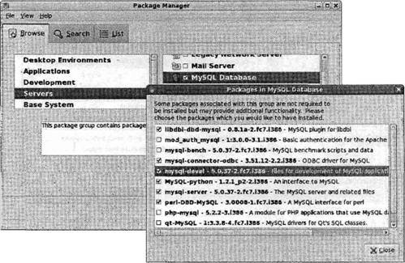
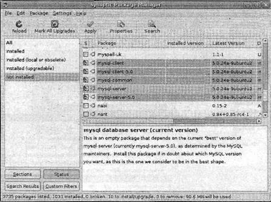
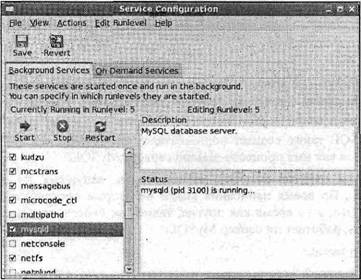
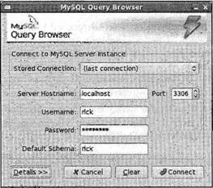
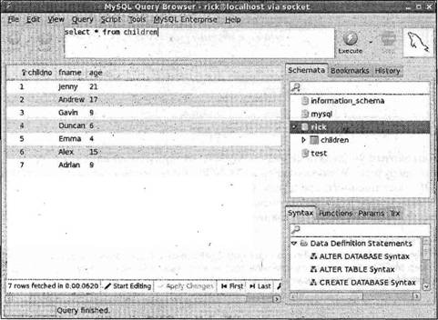
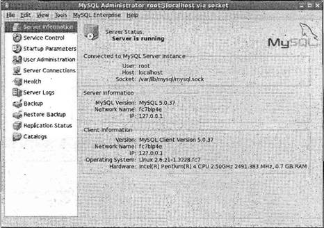
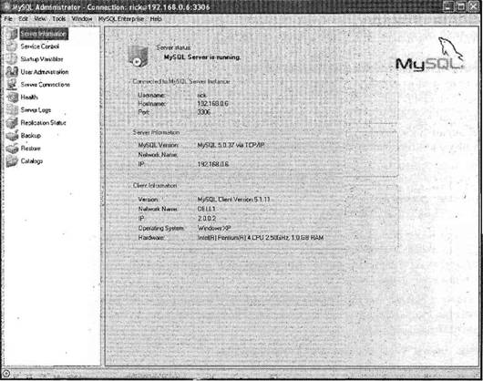
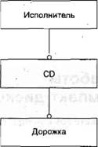
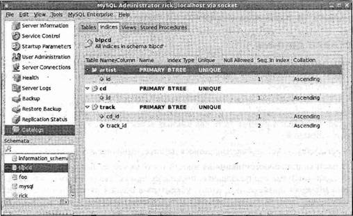
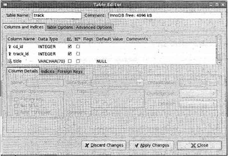

|
||||||||||||||||||||||||||||||||||||||||||||||||||||||||||||||||||||||||||||||||||||||||||||||||||||||||||||||||||||||||||||||||||||||||||||||||||||||||||||||||||||||||||||||||||||||||||||||||||||||||||||||||||||
|
|
Глава 8MySQL Теперь, когда вы изучили основы управления данными с помощью обычных файлов и затем посредством простой, но очень быстрой базы данных dbm, можно перейти к полнофункциональному средству работы с данными: СУРБД или системе управления реляционной базы данных (Relational Database Management System, RDBMS). Два самых известных приложения СУРБД с открытым исходным кодом — это PostgreSQL и MySQL, хотя существует и множество других. Есть также много коммерческих СУРБД, таких как Oracle, Sybase и DB2, все они многофункциональны и могут действовать на различных платформах. Работающая только под управлением ОС Windows система Microsoft SQL Server — еще одно популярное средство на коммерческом рынке СУБД. У всех этих программных продуктов есть свои достоинства, но с учетом занимаемого пространства и принадлежности к программному обеспечению с открытым кодом авторы книги сосредоточились исключительно на СУРБД MySQL. Появление MySQL восходит к 1984 г., а коммерческий вариант был разработан и поддерживается под покровительством компании MySQL АВ в течение последних нескольких лет. Поскольку СУРБД MySQL — это программное обеспечение с открытым исходным кодом, условия его использования часто смешивают с аналогичными условиями в других проектах с открытым программным кодом. Несмотря на то, что в большинстве случаев MySQL может применяться в соответствии с Общедоступной лицензией проекта GNU (GPL), есть обстоятельства, требующие покупки коммерческой лицензии для использования этого продукта. Следует внимательно проверить лицензионные требования на Web-сайте MySQL (www.mysql.com) и определить, какая редакция MySQL соответствует вашим потребностям. Если вам нужна база данных с открытым программным кодом, а условия применения MySQL в соответствии с требованиями лицензии GPL для вас не приемлемы, и вы не хотите покупать коммерческую лицензию, то можете рассмотреть как альтернативу применение мощной СУРБД PostgreSQL (во время написания книги лицензионные условия использования PostgreSQL были менее строгими). Подробности можно найти на Web-сайте www.postgresql.org. Примечание В этой главе обсуждаются следующие темы: □ установка MySQL; □ команды администрирования, необходимые для работы с MySQL; □ основные средства и функции MySQL; □ API для взаимодействия ваших программ на языке С с базами данных MySQL; □ создание реляционной базы данных, которую вы сможете применять в вашем приложении на языке С для управления коллекцией CD-дисков. УстановкаКакой бы вариант системы Linux вы не предпочли, вероятно, для него существует доступная версия MySQL, заранее откомпилированная и готовая к установке. Например, для Red Hat, SUSE и Ubuntu есть заранее откомпилированные пакеты, включенные в современные дистрибутивы этих ОС. Мы рекомендуем вам, как правило, применять заранее откомпилированные версии, поскольку они предоставляют самый легкий способ быстрых установки и запуска MySQL. Если в вашем дистрибутиве нет пакета MySQL или вы хотите получить самый свежий выпуск программного обеспечения, двоичные и исходные пакеты можно загрузить с Web-сайта MySQL. В этой главе мы описываем установку только заранее откомпилированных версий MySQL. Пакеты MySQLЕсли по какой-то причине вам вместо стандартной версии нужно загрузить MySQL из Интернета, для подготовки и выполнения примеров из этой книги следует применять сборку Standard общедоступной версии (community edition). Вы увидите, что в нее включены пакеты Мах и Debug. Пакет Max содержит дополнительные средства, такие как поддержка необычных типов файлов для хранения и развитых средств, например кластеризации. Пакеты Debug откомпилированы с дополнительным кодом отладки и отладочной информацией; к счастью, вам не понадобится отладка на столь низком уровне. Примечание Для разработки приложений на базе MySQL вам придется установить не только сервер, но и библиотеки разработки. Как правило, в вашем диспетчере пакетов (package manager) есть вариант MySQL, нужно только убедиться в том, что установлены и библиотеки средств разработки. На рис. 8.1 показан диспетчер пакетов, готовый установить MySQL с дополнительным пакетом средств разработки, выделенным и готовым к установке. Рис. 8.1 В других дистрибутивах организация пакетов немного иная. Например, на рис. 8.2 показан объединенный диспетчер пакетов дистрибутива Ubuntu, готовый к установке MySQL. Рис. 8.2 Установка MySQL также создает пользователя "mysql", имя которого по умолчанию применяется как имя процесса-демона сервера MySQL. После установки пакетов необходимо проверить, запущена ли автоматически СУРБД MySQL. Во время написания книги некоторые дистрибутивы, например, Ubuntu делали это, в то время как другие, такие как Fedora, нет. К счастью, очень легко проверить, работает ли сервер MySQL: $ ps -el | grep mysqld Если вы видите один или несколько выполняющихся процессов mysqld, следовательно, сервер стартовал. Во многих системах вы также увидите процесс safe_mysqld, утилиту для запуска реального процесса mysqld с корректным идентификатором пользователя. Если нужно запустить (или перезапустить либо остановить) сервер MySQL, можно использовать панель управления сервисами GUI (GUI services control panel). Панель настройки сервисов (Service Configuration pane) дистрибутива Fedora показана на рис. 8.3. Рис. 8.3 Вам следует применить редактор настройки сервисов для того, чтобы определить, хотите ли вы, чтобы сервер MySQL автоматически стартовал при каждом запуске ОС Linux. Настройка после установкиПредположим, что все идет как надо, СУБД MySQL установлена и стартовала с общим стандартным набором параметров. Это предположение можно проверить: $ mysql -u root mysql Если вы получите сообщение "Welcome to the MySQL monitor" ("Добро пожаловать в монитор MySQL") и затем приглашение mysql>, значит, сервер выполняется. Конечно, любой пользователь вмиг может подключиться к серверу и получить права администратора, но мы рассмотрим это лишь вкратце. Попробуйте ввести \sдля получения некоторой дополнительной информации о вашем сервере. Когда насмотритесь, введите quitили \qдля выхода из монитора. Дополнительную информацию можно получить с помощью команды mysql -?, которая выводит еще больше подробностей, касающихся сервера. В выводе есть одна деталь, которую следует проверить. После списка аргументов обычно выводится строка Default options are read from the following files in the given order:(Текущие параметры считаны из следующих файлов в заданном порядке:). Она указывает, где найти файл конфигурации, который следует использовать для настройки вашего сервера MySQL. Стандартный файл конфигурации -— /etc/my.cnf, хотя в некоторых дистрибутивах, например Ubuntu, применяется файл /etc/mysql/my.cnf. Состояние работающего сервера можно также проверить с помощью команды mysqladmin: $ mysqladmin -u root version Вывод не только подтвердит запуск, но и предоставит номер версии используемого вами сервера. Еще один полезный аспект применения команды mysqladmin— проверка конфигурационных параметров запущенного сервера с помощью опции variables: $ mysqladmin variables Эта команда выводит длинный список значений переменных. Пара особенно полезных — переменная datadir, сообщающая о том, где MySQL хранит данные, и переменная have_innodb, обычно равная YESи указывающая на то, что поддерживается универсальный механизм хранения данных (storage engine) InnoDB. MySQL поддерживает ряд механизмов хранения, представляющих собой низкоуровневую реализацию обработчиков для хранения данных. Наиболее популярные (и самые полезные) — InnoDB и MyISAM, но есть и другие, например механизм хранения в оперативной памяти (memory engine), совсем не использующий долговременную память, или CSV-механизм, применяющий файлы с переменными, разделенными запятыми. У разных механизмов хранения различные функции производительности. В настоящее время мы рекомендуем InnoDB как механизм хранения для баз данных общего назначения, представляющий собой компромиссное решение с точки зрения производительности и поддержки заданных связей между различными элементами данных. Если поддержка InnoDB не включена, проверьте файл конфигурации /etc/my.cnf, превратите в комментарий строку skip-innodb, поместив в начало строки знак номера или решетки ( #), и воспользуйтесь редактором сервисов для перезапуска MySQL. Если это не поможет, возможно, у вас версия MySQL, откомпилированная без поддержки InnoDB, Поищите на Web-сайте MySQL версию с поддержкой InnoDB, если вам это важно. В примерах данной главы без ущерба можно применить и альтернативный механизм хранения MyISAM, во многих дистрибутивах используемый по умолчанию. После того как вы убедитесь в том, что в двоичный файл сервера включена поддержка InnoDB, для того чтобы сделать его выбираемым по умолчанию механизмом хранения данных, вы должны задать его таковым в файле /etc/my.cnf, иначе по умолчанию будет применяться механизм хранения MyISAM. Редактирование очень простое: в раздел mysqldвставьте строку default-storage-engine=INNODB. К примеру, начало файла могло бы выглядеть следующим образом: [mysqld] default-storage-engine=INNODB datadir=/var/lib/mysql ... В оставшейся части данной главы мы полагаем, что по умолчанию в качества механизма хранения выбран InnoDB. В процессе эксплуатации вам, как правило, придется также изменять установленное по умолчанию место хранения данных, задаваемое переменной datadir. Делается это тоже с помощью редактирования раздела mysqlконфигурационного файла /etc/my.cnf. Например, если вы применяете механизм хранения InnoDB для размещения файлов данных в каталоге /vol02, а файлов регистрации — в каталоге /vol03 плюс задаете начальный размер файла данных 10 Мбайт с возможностью увеличения, можно использовать следующие конфигурационные строки: innodb_data_home_dir = /vol02/mysql/data innodb_data_file_path = ibdata1:10M:autoextend innodb_log_group_home_dir = /vol03/mysql/logs Более подробную информацию и другие конфигурационные параметры можно найти в интерактивных руководствах на Web-сайте www.mysql.com. Примечание Помните об имеющейся бреши в системе безопасности, упоминавшейся несколько разделов назад и позволяющей любому подключиться без пароля как пользователь root? Сейчас самое время усовершенствовать защиту. Не дайте сбить себя с толку имени пользователя root, применяемому во время установки MySQL. Между пользователем root СУРБД MySQL и пользователем root операционной системы нет никакой связи; MySQL просто регистрирует пользователя с именем "root" как администратора, что делает и ОС Linux. Пользователи базы данных MySQL и идентификаторы пользователей ОС Linux никак не связаны; у MySQL есть собственная встроенная система управления пользователями и правами доступа. По умолчанию пользователь с учетной записью в. вашей установленной системе Linux может зарегистрироваться на вашем сервере MySQL как администратор этой СУРБД. После того как вы ограничите права пользователя root СУРБД MySQL, например, разрешив только локальному пользователю регистрироваться с именем root и установив пароль для такого доступа, вы можете добавить только тех пользователей и только те права доступа, которые абсолютно необходимы для функционирования вашего приложения. Установить пароль можно любым возможным способом, но самый простой с помощью команды: $ mysqladmin -u root password newpassword Она задает начальный пароль newpassword. Этот метод порождает проблему, заключающуюся в том, что понятный текстовый пароль остается в протоколе или хронологии (history) вашей командной оболочки и может просматриваться кем угодно с помощью команды psво время выполнения вашей команды или может быть извлечен из протокола команды. Лучше еще раз применить монитор MySQL на этот раз для отправки нескольких команд на языке SQL, которые изменят ваш пароль. $ mysql -u root Welcome to the MySQL monitor. Commands end with ; or \g. Your MySQL connection id is 4 Type 'help;' or '\h' for help. Type ' \c' to clear the buffer. mysql> SET password=PASSWORD('secretpassword'); Query OK, 0 rows affected (0.00 sec) Конечно же, выберите пароль, известный только вам, а не пример "secretpassword", использованный нами в данном случае для того, чтобы показать, куда вводить ваш собственный пароль. Если вы когда-нибудь захотите удалить пароль, можно просто задать пустую строку на месте "secretpassword", и пароль будет удален. Примечание Теперь рассмотрим таблицу прав доступа, чтобы убедиться в том, что пароль установлен. Сначала с помощью команды use переключитесь на базу данных mysql и затем запросите внутренние таблицы: mysql> use mysql mysql> SELECT user, host, password FROM user; +------+-----------+------------------+ | user | host | password | +------+-----------+------------------+ | root | localhost | 2dxf8e9c23age6ed | | root | fc7blp4e | | | | localhost | | | | fc7blp4e | | +------+-----------+------------------+ 4 rows in set (0.01 sec) mysql> Отметьте, что вы создали пароль для пользователя root, только когда подключились с компьютера localhost. MySQL может хранить права доступа не только для пользователей, но и для классов соединений (connection classes), основанных на имени узла. Следующим шагом в защите вашей установки будет удаление ненужных пользователей, устанавливаемых MySQL по умолчанию. Приведенная далее команда удаляет из таблицы прав доступа всех пользователей с именами, отличающимися от root. mysql> DELETE FROM user WHEREuser != 'root'; Query OK, 2 rows affected (0.01 sec) Следующая команда удаляет все регистрации с машин, отличных от компьютера localhost. mysql> DELETE FROM user WHEREhost != 'localhost'; Query OK, 1 row affected (0.01 sec) И последнее, примените следующую команду для того, чтобы убедиться в отсутствии случайных регистраций: mysql> SELECT user, host, password FROM user; +------+-----------+------------------+ | user | host | password | +------+-----------+------------------+ | root | localhost | 2dxf8e9c23age6ed | +------+-----------+------------------+ 1 row in set (0.00 sec) mysql> exit Как видно из предыдущего вывода, теперь у вас есть только один зарегистрированный пользователь, который может подключаться только с машины localhost. Внимание! Момент истины: можете ли вы в дальнейшем регистрироваться с паролем, который установили? На сей раз вы задаете параметр -p, который сообщает MySQL о необходимости вывести подсказку для ввода пароля: $ mysql -u root -p Enter password: Welcome to the MySQL monitor. Commands end with ; or \g. Your MySQL connection id is 7 Type 'help;' or '\h' for help. Type '\c' to clear the buffer. mysql> Теперь у вас есть работающая версия MySQL, заблокированная так, что только пользователь root с паролем, установленным вами, может подключиться к серверу базы данных и только с локальной машины. Подключиться к MySQL и ввести пароль вы можете из командной строки. Делается это с помощью параметра, --password, например, --password=secretpasswordили -psecretpassword, но ясно, что это небезопасно, потому что пароль можно увидеть с помощью команды psили просмотра хронологии команды. Однако ввод пароля в командной строке иногда просто необходим, например, если вы пишете сценарии, которым нужно подключаться к базе данных MySQL. Следующий шаг — добавление пользователя или пользователей, которые нужны. В случае системы Linux, не следует без крайней необходимости использовать учетную запись root для регистрации в базе данных MySQL, лучше создать обычного пользователя для каждодневного применения. Как мы отмечали ранее, вы можете создать пользователей с различными правами подключения с разных машин; в примере пользователю root из соображений безопасности разрешено подключаться только с локальной машины. В данной главе создадим нового пользователя широкими правами доступа. Rick сможет подключаться тремя разными способами: □ он сможет подключаться с локальной машины; □ он сможет подключаться с любой машины, IP-адрес которой находится в диапазоне от 192.168.0.0 до 192.168.0.255; □ он сможет подключаться с любой машины, входящей в домен wiley.com. Самый легкий способ сделать это безопасно — создать трех разных пользователей с тремя разными зонами подключения. У этих пользователей по вашему желанию даже могут быть разные пароли, зависящие от того, с какого адреса они устанавливают соединение. Создать пользователей и присвоить им полномочия можно с помощью команды grant:. Создадим пользователя с тремя только что перечисленными зонами, подключения. Ключевое слово IDENTIFIED BY— немного странная синтаксическая запись для задания начального пароля. Обратите внимание на способ применения кавычек; важно применять символы одинарных кавычек точно так, как показано, иначе вы не сможете создать пользователей, как намечали. Подключитесь к MySQL как пользователь root и затем выполните следующие действия. 1. Создайте регистрацию входа с локальной машины (login) для пользователя rick. mysql> GRANT ALL ON *.* TO rick@localhost IDENTIFIED BY 'secretpassword'; Query OK, 0 rows affected (0.03 sec) 2. Затем создайте регистрацию входа с любой машины из подсети класса С 192.168.0. Учтите, что следует использовать одинарные кавычки для защиты IP-диапазона и маску /255.255.255.0 для указания диапазона допустимых IP-адресов. mysql> GRANT ALL ON *.* TO rick@'192.168.0.0/255.255.255.0' IDENTIFIED BY 'secretpassword'; Query OK, 0 rows affected (0.00 sec) 3. В заключение создайте такую регистрацию входа, чтобы пользователь rick мог зарегистрироваться с любой машины из домена wiley.com (и снова обратите внимание на одинарные кавычки). mysql> GRANT ALL ON *.* ТО rick@'%.wiley.com' IDENTIFIED BY 'secretpassword'; Query OK, 0 rows affected. (0.00 sec) 4. Опять просмотрите таблицу пользователей, чтобы еще раз проверить все элементы! mysql> SELECT user, host, password FROM mysql.user; +------+---------------------------+------------------+ | user | host | password | +------+---------------------------+------------------+ | root | localhost | 2dxf8e8cl7ade6ed | | rick | localhost | 3742g6348q8378d9 | | rick | %.wiley.com | 3742g6348q8378d9 | | rick | 192.168.0.0/255.255.255.0 | 3742g6348q8378d9 | +------+---------------------------+------------------+ 4 rows in set (0.00 sec) mysql> Естественно, необходимо откорректировать предшествующие команды и пароли в соответствии с вашими локальными настройками. Вы должны были заметить команду GRANT ALL ON *.*, которая, как вы наверное догадались, предоставляет пользователю rick обширные права доступа. Это хорошо для опытного пользователя, но не годится для обычных пользователей. Мы более подробно обсудим команду grantв разд. "Создание пользователей и наделение их правами доступа" далее в этой главе, где среди прочего покажем, как создать пользователя с ограниченными правами доступа. Теперь, когда вы установили и запустили СУРБД MySQL (если нет, см. следующий раздел), сделали установку более безопасной, и создали пользователя- неадминистратора, готового выполнять кое-какую работу, кратко обсудим поиск и устранение неисправностей после установки, а затем немного вернемся назад и дадим краткий обзор основ администрирования базы данных MySQL. Устранение неисправностей после установкиЕсли при использовании mysql нет подключения к базе данных, проверьте с помощью системной команды ps, запущен ли серверный процесс. Если его нет в списке, попробуйте запустить mysql_safed -log. В этом случае в регистрационный каталог MySQL должен быть записан файл с дополнительной информацией. Можно конечно попытаться явно запустить процесс mysqld; используйте команду mysqld --verbose --helpдля получения полного списка опций командной строки. Вполне возможно, что сервер функционирует, но просто отвергает ваше подключение. Если так, далее следует проверить наличие базы данных, особенно базы данных стандартных прав доступа MySQL (default permissions database). В дистрибутивах Red Hat она обычно по умолчанию располагается в /var/lib/mysqlis, другие дистрибутивы используют разные каталоги. Проверьте сценарий запуска MySQL (например, в файле /etc/init.d) и конфигурационный файл /etc/my.cnf. В противном случае запустите программу явно с помощью команды mysqld --verbose --helpи найдите переменную datadir. После того как вы определили каталог базы данных, проверьте, содержит ли он хотя бы базу данных стандартных прав доступа (с именем mysql) и что именно ее, заданную в файле my.cnf, использует процесс-демон сервера. Если вы все еще не подключились, воспользуйтесь редактором сервисов (service editor) для остановки сервера, убедитесь в том, что не выполняется ни один процесс mysqld, и затем перезапустите его снова и попробуйте подключиться. Если вы все- таки никуда не попали, можно полностью деинсталлировать MySQL и установить ее с нуля еще раз. Для выяснения некоторых известных только посвященным возможностей очень полезной может оказаться документация MySQL на Web-сайте (более свежая, чем интерактивное руководство на локальной машине, кроме того, в ней есть редактируемые пользователями подсказки, и предложения, и форум). Администрирование MySQLГруппа программ-утилит, включенных в дистрибутив MySQL, облегчает процесс администрирования базы данных. Самая популярная из них — программа mysqladmin. В следующем разделе мы опишем эту и другие утилиты. КомандыВсе команды MySQL, за исключением mysqlshow, принимают как минимум три стандартных параметра, описанных в табл. 8.1. Таблица 8.1
Примечаниеmyisamchk Утилита myisamchkразработана для проверки и корректировки любых таблиц данных, применяющих стандартный табличный формат MYISAM, исходно поддерживаемый СУРБД MySQL. Обычно утилиту myisamchkследует запускать от имени пользователя mysql, созданного во время установки, из каталога, в котором размещаются таблицы. Для проверки базы данных выполните команду su mysql, измените название каталога в соответствии с именем базы данных и запустите утилиту myisamchkс одной или несколькими опциями, предложенными в табл. 8.2. Например, myisamchk -e -r *.MYI Самые популярные опции команды приведены в табл. 8.2. Таблица 8.2
Дополнительную информацию можно получить, запустив myisamchkбез параметров и просмотрев подробные сообщения системы помощи. Данная утилита никак не влияет на таблицы формата InnoDB. mysql Это основное и очень мощное средство командной строки СУРБД MySQL. С его помощью тем или иным способом можно выполнить любую административную или пользовательскую задачу. Запустить монитор mysqlможно из командной строки; добавив заключительный дополнительный параметр, имя базы данных, вы сможете в мониторе обойтись без команды use <база_данных>. Далее приведен пример запуска монитора от имени пользователя rick, запроса пароля (обратите внимание на пробел после -p) и применения базы данных fooпо умолчанию. $ mysql -u rick -р foo Для постраничного просмотра других опций командной строки монитора mysql примените команду mysql --help | less. Если вы запускаете СУРБД MySQL без указания базы данных, для выбора одной из баз данных можно использовать опцию use <база_данных>, приведенную в списке команд в табл. 8.3. Монитор mysqlможно выполнить и в неинтерактивном режиме, собрав команды во входном файле и считывая его из командной строки. В этом случае вы должны задать пароль в командной строке. $ mysql -u rick --password=secretpassword foo < sqlcommands.sql После считывания и выполнения ваших команд mysql выведет на экран строку приглашения. Во время подключения программы-клиента mysql к серверу в дополнение к стандартному набору команд SQL92 поддерживается ряд специфических команд, перечисленных в табл. 8.3. Таблица 8.3
Очень важная команда в этом наборе — use. Сервер mysqldпредназначен для поддержки множества различных баз данных, обслуживаемых и управляемых одним серверным процессом. Во многих других серверах баз данных, таких как Oracle и Sybase, применяется термин "схема", а в СУРБД MySQL чаще используется термин "база данных". (В обозревателе запросов (Query Browser) MySQL, к примеру, применяется термин "схема".) Каждая база данных (в терминологии MySQL) представляет собой в основном независимый набор таблиц. Это позволяет настраивать разные базы данных для различных целей и назначать разных пользователей различным базам данных, используя для эффективного управления ими один и тот же сервер баз данных. С помощью команды useможно при наличии соответствующих прав переключаться между различными базами данных. Особая база данных mysql, создаваемая автоматически при каждой установке СУРБД MySQL, применяется как основное хранилище сведений о пользователях и правах доступа. Примечаниеmysqladmin Эта утилита — основное средство быстрого администрирования базы данных MySQL. В дополнение к обычным параметрам она поддерживает основные команды, перечисленные в табл. 8.4. Таблица 8.4
Запустите из строки приглашения утилиту mysqladminбез параметров, чтобы увидеть полный список опций. Вам потребуется применить | less. mysqlbug Если чуть повезет, вам никогда не представится шанс применить эту утилиту. Судя по имени, это средство создает отчет об ошибках для отправки в группу технической поддержки MySQL. Перед отправкой есть возможность отредактировать сформированный файл, включив в него дополнительную информацию, которая может оказаться полезной разработчикам. mysqldumpЭто крайне полезная утилита, позволяющая получить частичный или полный дамп базы данных в виде единого файла с набором команд языка SQL, которые могут быть считаны обратно в MySQL или в другую СУРБД. Она принимает как параметр стандартную информацию о пользователе и пароль, а также имена базы данных и таблиц. Дополнительные опции, приведенные в табл. 8.5, существенно расширяют функциональные возможности этой утилиты. Таблица 8.5
По умолчанию mysqldumpпосылает эти данные в стандартный вывод, поэтому вам потребуется перенаправление их в файл. Эта утилита очень удобна для перемещения данных или быстрого создания резервных копий, и благодаря клиент-серверной реализации MySQL ее даже можно использовать для выполнения сложного удаленного резервного копирования с помощью клиента mysqldump, установленного на другой машине. Далее для примера приведена команда подключения пользователя rick и получения дампа базы данных myplaydb: $ mysqldump -u rick -p myplaydb > myplaydb.dump Результирующий файл, у которого в нашей системе только одна таблица в базе данных, выглядит следующим образом: -- MySQL dump 10.11 -- -- Host: localhost Database: myplaydb -- -------------------------------------------------- -- Server version 5.0.37 /*!40101 SET @OLD_CHARACTER_SET_CLIENT=@@CHARACTER_SET_CLIENT */; /*!40101 SET @OLD_CHARACTER_SET_RESULTS=@@CHARACTER_SET_RESULTS */; /*!40101 SET @OLD_COLLATION_CONNECTION=@@COLLATION_CONNECTION */; /*!40101 SET NAMES utf8 */; /*!40103 SET @OLD_TIME_ZONE=@@TIME_ZONE */; /*!40103 SET TIME_ZONE='+00:00' */; /*!40014 SET @OLD_UNIQUE_CHECKS=@@UNIQUE_CHECKS, UNIQUE_CHECKS=0 */; /*!40014 SET @OLD_FOREIGN_KEY_CHECKS=@@FOREIGN_KEY_CHECKS, FOREIGN_KEY_CHECKS=0*/; /*!40101 SET @OLD_SQL_MODE=@@SQL_MODE, SQL_MODE='NO_AUTO_VALUE_ON_ZERO'*/; /*!40111 SET @OLD_SQL_NOTES=@@SQL_NOTES, SQL_NOTES=0 */; -- -- Table structure for table 'children' -- DROP TABLE IF EXISTS 'children'; CREATE TABLE 'children' ( 'childno' int(11) NOT NULL auto_increment, 'fname' varchar(30) default NULL, 'age' int(11) default NULL, PRIMARY KEY ('childno') ) ENGINE=InnoDB DEFAULT CHARSET=latin1; -- -- Dumping data for table 'children' -- LOCK TABLES 'children' WRITE; /*!40000 ALTER TABLE 'children'DISABLE KEYS */; INSERT INTO 'children' VALUES (1,'Jenny',21),(2,'Andrew',17),(3,'Gavin',8), (4,'Duncan',6),(5,'Emma',4), (6,'Alex',15),(7,'Adrian',9); /*!40000 ALTER TABLE 'children'ENABLE KEYS */; UNLOCK TABLES; /*!40103 SET TIME_ZONE=@OLD_TIME_ZONE */; /*!40101 SET SQL_MODE=@OLD_SQL_MODE */; /*!40014 SET FOREIGN_KEY_CHECKS=@OLD_FOREIGN_KEY_CHECKS */; /*!40014 SET UNIQUE_CHECKS=@OLD_UNIQUE_CHECKS */; /*!40101 SET CHARACTER_SET_CLIENT=@OLD_CHARACTER_SET_CLIENT */; /*!40101 SET CHARACTER_SET_RESULTS=@OLD_CHARACTER_SET_RESULTS */; /*!40101 SET COLLATION_CONNECTION=@OLD_COLLATION_CONNECTION */; /*!40111 SET SQL_NOTES=@OLD_SQL_NOTES */; -- Dump completed on 2007-0.6-22 20:11:48mysqlimport Команда mysqlimportприменяется для загрузки в таблицу большого количества данных. С помощью mysqlimportвы можете считывать из файла ввода большие объемы текстовых данных. Этой команде требуются только имена файла и базы данных; mysqlimportзагрузит данные в базу данных, в таблицу с тем же именем, что и имя файла (за исключением расширения файла). Вы должны убедиться в том, что в текстовом файле столько же столбцов данных, сколько их в таблице, заполняемой данными, и типы данных совместимы. По умолчанию данные следует разделять знаком табуляции. Можно также выполнять команды SQL из текстового файла, просто запустив mysqlс перенаправлением ввода из файла, как мы упоминали ранее. mysqlshow Эта маленькая утилита может быстро предоставить информацию о вашей установке MySQL и составляющих ее базах данных. □ Без параметров она отображает все имеющиеся базы данных. □ С базой данных в качестве параметра она выводит таблицы этой базы данных. □ С именами базы данных и таблицы утилита отображает перечень столбцов заданной таблицы. □ Если заданы база данных, таблица и столбец, утилита выводит подробную информацию о заданном столбце. Создание пользователей и наделение их правами доступаВ роли администратора MySQL вам чаще всего придется обслуживать пользователей: добавлять, и удалять пользователей СУРБД MySQL и управлять их полномочиями. Начиная с версии MySQL 3.22, правами доступа или полномочиями пользователей управляют в мониторе MySQL с помощью команд grantи revoke— задача, гораздо менее устрашающая, чем непосредственная корректировка таблиц прав доступа, которая требовалась в ранних версиях MySQL. grant Команда MySQL grantпочти, хотя и не полностью, соответствует синтаксису стандарта SQL92. Далее приведен общий формат: grant <привилегия> on <объект> to <пользователь> [identified by user-password] [with grant option]; В табл. 8.6 перечислено несколько значений прав доступа, которые могут быть предоставлены. Таблица 8.6
У некоторых прав доступа есть дополнительные опции. Например, create viewдает пользователю право создавать представления. Для получения полного списка прав доступа обратитесь к документации MySQL, относящейся к вашей версии СУРБД, поскольку эта область расширяется с каждой новой версией MySQL. Существует также несколько специальных административных прав доступа, но здесь мы их не рассматриваем. Объект, которому вы предоставляете данные права, обозначается как databasename.tablename и в лучших традициях Linux *— ссылка на любое имя, поэтому *.*означает все объекты в каждой базе данных, a foo.*— все таблицы в базе данных foo. Если заданный пользователь уже существует, права доступа корректируются с учетом вносимых вами изменений. Если такого пользователя нет, он создается с заданными правами доступа. Как вы уже видели, пользователей можно задавать на определенных компьютерах. Пользователя и компьютер следует задавать в одной команде для того, чтобы в полной мере использовать гибкость схемы предоставления прав доступа MySQL. В синтаксисе языка SQL специальный символ %— символ подстановки, во многом сходный, с символом *в среде командной оболочки. Вы можете формировать отдельные команды для каждого требуемого набора прав доступа, но если, например, вы хотите предоставить доступ пользователю rick с любого компьютера в домене wiley.com, пользователя rick можно описать как rick@'%.wiley.com' Символ подстановки %всегда следует заключать в кавычки для того, чтобы отделить его от остальных текстовых данных. Вы также можете применять нотацию IP/Netmask (N.N.N.N/M.M.M.M), задающую сетевой адрес для управления доступом. Также, как раньше вы использовали описание rick@'192.163.0.0/255.255.255.0'для предоставления пользователю rick доступа с любого сетевого компьютера, можно задать rick@'192.168.0.1'для ограничения доступа пользователя rick единственной рабочей станцией или ввести rick@'192.0.0.0/255.0.0.0', расширив область действия прав до любой машины в сети 192 класса А. В еще одном примере команда mysql> GRANT ALL ON foo.* TO rick@'%' IDENTIFIED BY 'bar'; создает пользователя rick с полным набором прав доступа к базе данных fooдля подключения с любой машины с начальным паролем bar. Если базы данных fooдо сих пор не существует, у пользователя rick теперь появится право создать ее с помощью команды SQL create database. Ключевые слова IDENTIFIED BY— не обязательная часть команды, но убедиться в том, что у всех пользователей во время их создания появляются пароли, совсем неплохо. Следует быть особенно внимательными, имея дело с именами пользователей, компьютеров или баз данных, содержащими знак подчеркивания, поскольку символ _в языке SQL соответствует любому одиночному символу во многом так же, как знак %соответствует любой строке символов. Везде, где это возможно, старайтесь избегать использования символа подчеркивания в именах пользователей и баз данных. Обычно ключевые слова with grant optionприменяются только для создания вспомогательного административного пользователя, но они также могут использоваться для разрешения вновь созданному пользователю получить права доступа, предоставляемые ему другими пользователями. Всегда применяйте ключевые слова with grant optionобдуманно. revoke Естественно, администратор не может только предоставлять права, но также и лишает прав. Делается это с помощью команды revoke. revoke <привилегия> on <объект> from <пользователь> и с применением почти такого же формата, как в команде grant. Например: mysql> REVOKE INSERT ON foo.* FROM rick@'%'; Но команда revokeне удаляет пользователей. Если вы хотите удалить пользователя окончательно, не просто измените его права доступа, а примените команду revokeдля удаления его прав. Затем вы сможете полностью удалить его из таблицы пользователей user, переключившись на внутреннюю базу данных mysqlи удалив соответствующие строки из таблицы user. mysql> use mysql mysql> DELETE FROM user WHERE user = "rick" mysql> FLUSH PRIVILEGES; Отказавшись от указания компьютера, вы обеспечите удаление всех записей, относящихся к пользователю MySQL, в данном случае rick, которого хотите удалить. После этого убедитесь в том, что вы вернулись в вашу базу данных (с помощью команды use), иначе вы можете случайно продолжить работу с собственной внутренней базой данных MySQL. Примечание ПаролиЕсли вы хотите задать пароли для уже существующих пользователей, не имевших их до сих пор, или изменить собственный или чей-то пароль, следует подключиться к серверу MySQL как пользователь root и напрямую обновить данные пользователя. Например, mysql> use mysql mysql> SELECT host, user, password FROM user; Вы должны получить перечень, похожий на следующий: +-----------+------+------------------+ | host | user | password | +-----------+------+------------------+ | localhost | root | 67457e226a1a15bd | | localhost | foo | | +-----------+------+------------------+ 2 rows in set (0.00 sec) Если вы хотите присвоить пароль bar пользователю foo, можно сделать следующее: mysql> UPDATE user SET password = password('bar') WHERE user = 'foo'; Для проверки выведите снова соответствующие столбцы таблицы пользователей user: mysql> SELECT host, user, password FROM user; +-----------+------+------------------+ | host | user | password | +-----------+------+------------------+ | localhost | root | 65457e236glalwbq | | localhost | foo | 7c9e0a41222752fa | +-----------+------+------------------+ 2 rows in set (0.00 sec) mysql> Теперь наверняка у пользователя foo есть пароль. Не забудьте вернуться в свою исходную базу данных. Начиная с версии MySQL 4.1, схема формирования паролей обновлена по сравнению с более ранними версиями. Но для обратной совместимости вы все еще можете задавать пароль, применяя старый алгоритм с функцией OLD_PASSWORD('password to set'), если вам это нужно. Создание базы данныхСледующий ваш шаг — создание базы данных. Предположим, что вам нужна база данных с именем rick. Напоминаем о том, что вы уже создали пользователя с тем же именем. Сначала надо предоставить пользователю rick широкий ряд полномочий, чтобы он мог создавать новые базы данных. В среде разработки это особенно полезно, т. к. обеспечивает больше гибкости. mysql> GRANT ALL ON *.* TO rick@localhost IDENTIFIED BY 'secretpassword'; Теперь протестируйте набор прав доступа, зарегистрировавшись как rick, и создайте базу данных: $ mysql -u rick -р Enter password: ... mysql> CREATE DATABASE rick; Query OK, 1 row affected (0.01 sec). mysql> Далее сообщите MySQL о том, что вы хотите переключиться на вашу новую базу данных: mysql> use rick Сейчас вы можете ввести в вашу базу данных таблицы и нужные вам данные. Во время последующих регистрации вы сможете задавать базу данных в конце командной строки и избежать применения команды use. $ mysql -u rick -p rick Введя после подсказки пароль, вы автоматически, в ходе процесса подключения, переключитесь на использование базы данных rick по умолчанию. Типы данныхИтак, у вас есть действующий сервер MySQL, безопасная регистрация вашего пользователя и база данных, готовая к применению. Что дальше? Сейчас нужно создать несколько таблиц со столбцами для хранения данных. Но прежде чем вы сможете сделать это, следует узнать о типах данных, поддерживаемых MySQL. Типы данных MySQL довольно обычны, поэтому мы лишь бегло пробежимся по основным типам, и как всегда более подробную информацию можно найти в руководстве по MySQL на Web-сайте MySQL. Тип BooleanСтолбец логического типа можно определить с помощью ключевого слова BOOL. Как вы и ожидали, в нем могут храниться значения TRUEи FALSE, а также специальное "неопределенное" значение баз данных NULL. Символьный тип В табл. 8.7 перечислены все доступные символьные типы. Первые три — стандартные, оставшиеся три специфичны для MySQL. Мы полагаем, что на практике вы будете придерживаться стандартных типов. Таблица 8.7
В табл. 8.8 показано, что числовые типы делятся на целочисленные и типы с плавающей точкой. Таблица 8.8
Мы полагаем, что в основном вы будете пользоваться типами INT, DOUBLEи NUMERIC, поскольку они ближе всего к стандартным типам SQL. Остальные типы нестандартные и могут отсутствовать в тех системах управления базами данных, куда вы решите переместить данные когда-либо в будущем. Временной тип В табл. 8.9 перечислены пять имеющихся временны́х типов. Таблица 8.9
Учтите, что следует быть внимательными при сравнении значений типов DATEи DATETIMEв отношении способа обработки значения времени; результаты могут оказаться неожиданными. Подробности ищите в руководстве по MySQL, поскольку поведение разных версий СУРБД слегка отличается. Создание таблицыИмея действующий сервер базы данных, зная как предоставлять права доступа пользователям и как создавать базу данных, а также ознакомившись с основными типами данных, можно переходить к созданию таблиц. Таблица базы данных — это просто последовательность строк, каждая из которых содержит фиксированный набор столбцов. Она довольно похожа на электронную таблицу за исключением того, что у всех строк должно быть одно и то же число столбцов и одинаковые типы данных и каждая строка каким-то образом должна отличаться от всех остальных строк таблицы. База данных может, если для этого есть разумные основания, содержать очень много, практически неограниченное количество таблиц. Однако лишь немногим СУРБД требуется более 100 таблиц, а большинству маленьких систем вполне достаточно 25 или около того таблиц. Синтаксис языка SQL, посвященный созданию объектов баз данных и называемый DDL (data definition language, язык определения данных), невозможно охватить полностью в одной главе; все подробности есть в разделе документации, на Web-сайте MySQL. Базовый синтаксис для создания таблиц следующий: CREATE TABLE <таблица> { column type [NULL | NOT | NULL] [AUTO_INCREMENT] [PRIMARY KEY] [, ...] [, PRIMARY KEY (столбец [, ...] ) ] ) Удалять таблицы можно с помощью очень простой синтаксической формулы DROP TABLE. DROP TABLE <таблица> Есть всего лишь небольшое число ключевых слов, приведенных в табл. 8.10, которые вам необходимо знать для того, чтобы быстро создать таблицу. Таблица 8.10
Выполните упражнение 8.1. Упражнение 8.1. Создание таблицы и вставка данныхГораздо легче понять создание таблицы на практике, чем смотреть на базовую синтаксическую запись, поэтому сейчас вы сделаете это, создав таблицу с именем children, в которой будет храниться уникальный номер для каждого ребенка, его имя и возраст. Номер ребенка вы сделаете первичным ключом. 1. Вам нужен следующий оператор языка SQL CREATE TABLE children ( childno INTEGER AUTO_INCREMENT NOT NULL PRIMARY KEY, fname VARCHAR(30), age INTEGER ); Примечание 2. Вы также можете определить первичный ключ отдельно в определении столбца. Далее приведен пример интерактивного сеанса, в котором показан альтернативный синтаксис: mysql> use rick Database changed mysql> CREATE table children ( -> childno INTEGER AUTO_INCREMENT NOT NULL, -> fname varchar(30), -> age INTEGER, -> PRIMARY KEY(childno) -> ); Query OK, 0 rows affected (0.04 sec) mysql> Вы можете записать команду или оператор SQL в нескольких строках, и монитор mysqlприменит подсказку ->, чтобы показать, что вы находитесь в строке продолжения. Как упоминалось ранее, команда SQL завершается точкой с запятой, чтобы показать, что вы закончили и готовы к обработке вашего запроса сервером базы данных. Если вы допустили ошибку, MySQL разрешит вернуться назад к предыдущим командам, откорректировать и повторно ввести их простым нажатием клавиши <Enter>. 3. Теперь у вас есть таблица, в которую можно вводить данные. Данные добавляются с помощью SQL-команды INSERT. Поскольку вы определили столбец childnoкак AUTO_INCREMENT, в него не вводятся данные, вы просто разрешаете MySQL разместить в нем уникальный номер. mysql> INSERT INTO children(fname, age) VALUES("Jenny", 21); Query OK, 1 row affected (0.00 sec) mysql> INSERT INTO children(fname, age) VALUES("Andrew", 17); Query OK, 1 row affected (0.00 sec) Для того чтобы убедиться в том, что данные введены корректно, можно снова извлечь их. Выбираются данные из таблицы командой SELECT: mysql> SELECT childno, fname, age FROM children; +---------+--------+-----+ | childno | fname | age | +---------+--------+-----+ | 1 | Jenny | 21 | | 2 | Andrew | 17 | 2 rows in set (0.00 sec) mysql> Вместо явного перечисления столбцов для выборки вы могли бы применить для указания столбцов звездочку (*), которая перечислит все столбцы в названной таблице. Это очень удобно в интерактивном режиме, но в рабочем программном коде всегда следует явно называть столбец или столбцы, предназначенные для выборки. Как это работает Вы открыли интерактивный сеанс подключения к серверу базы данных и переключились на базу данных rick. Затем вы ввели команду SQL для создания вашей таблицы, используя нужное количество строк для ввода команды. Как только вы завершили команду с помощью знака ;, MySQL создала вашу таблицу. Затем вы применили команду INSERTдля ввода данных в вашу новую таблицу, позволив в столбце childnoавтоматически размещать числа. В заключение вы применили команду SELECTдля вывода данных вашей таблицы. Объем данной главы не позволяет дать полное описание языка SQL и тем более принципов проектирования баз данных. Дополнительную информацию см. на Web-сайте www.mysql.com. Графические средстваРабота с таблицами и данными в командной строке хороша и удобна во всех отношениях, но в наши дни большинство людей предпочитает графические средства. У СУРБД MySQL два основных графических средства: MySQL Administrator и MySQL Query Browser. Точное имя пакета с этими средствами зависит от используемого вами дистрибутива; например, в дистрибутивах Red Hat ищите mysql-gui-tools и mysql-administrator. В дистрибутиве Ubuntu вам, возможно, сначала придется переключиться на универсальный ("Universe") репозитарий, а затем искать mysql-admin. MySQL Query BrowserОбозреватель запросов (query browser) довольно простое, но эффективное средство. После установки его можно запустить из меню GUI (graphical user interface, графический интерфейс пользователя). Запустив обозреватель, вы увидите начальный экран, запрашивающий подробности подключения (рис. 8.4). Рис. 8.4 Если вы запустили обозреватель на той же машине, что и сервер, просто используйте имя локального компьютера как имя сервера. После подключения вы получаете простой GUI (рис. 8.5), который позволяет выполнять запросы в графической оболочке, предоставляя все преимущества редактирования в графическом режиме заодно с графическим способом редактирования данных в таблице и несколькими экранами помощи с синтаксисом языка SQL. Рис. 8.5 MySQL Administrator Мы очень надеемся на то, что вы познакомитесь с MySQL Administrator. Это мощный, стабильный и легкий в использовании графический интерфейс для СУРБД MySQL, заранее откомпилированная версия которого существует как для ОС Linux, так и для Windows (даже исходный код доступен, если он вам нужен). MySQL Administrator позволяет управлять сервером MySQL и выполнять команды SQL через графический интерфейс пользователя. При запуске MySQL Administrator выводится экран подключения, очень похожий на экран подключения MySQL Query Browser. После ввода некоторых подробностей у вас появится главная страница управления (рис. 8.6). Рис. 8.6 Если вы хотите управлять сервером MySQL из программы-клиента в ОС Windows, можно загрузить Windows-версию MySQL Administrator из раздела Web-сайта MySQL, посвященного средствам GUI. Когда писалась эта книга, в загрузку были включены администратор, обозреватель запросов и утилита переноса базы данных. На рис. 8.7 показан экран состояния, как видите, он почти идентичен версии Linux, Примечание После запуска MySQL Administrator вы сможете провести наблюдения при разной настройке и отслеживаемых параметрах. Это очень легкое в использовании средство, но у нас нет возможности в этой единственной главе вдаваться в подробности. Рис. 8.7 Доступ к данным MySQL из программ на СТеперь, когда основы СУРБД MySQL остались в стороне, давайте рассмотрим, как, не применяя графические средства или программу-клиент mysql, получить доступ к СУРБД MySQL из вашего приложения. К MySQL можно получить доступ из программ на разных языках, включая следующие: □ С; □ Eiffel; □ С++; □ Tcl; □ Java; □ Ruby; □ Perl; □ Python; □ PHP. Есть и драйвер ODBC для доступа к MySQL из приложений ОС Windows, таких как Access. Существует даже драйвер ODBC для ОС Linux, но в его применении мало смысла. В этой главе мы ограничились интерфейсом языка С, потому что в первую очередь этому языку программирования посвящена книга и потому что одни и те же библиотеки обеспечивают подключение из ряда других языков. Подпрограммы подключенияПодключение к базе данных MySQL из программы на языке С состоит из двух шагов: □ инициализации структуры идентификации подключения или дескриптора подключения; □ выполнения физического подключения. Сначала примените mysql_initдля инициализации дескриптора вашего подключения: #include <mysql.h> MYSQL *mysql_init(MYSQL*); Обычно в подпрограмму передается NULLи возвращается указатель на вновь выделяемую память для структуры дескриптора подключения. Если вы пересылаете указатель на существующую структуру, она инициализируется заново. В случае ошибки возвращается NULL. К этому моменту вы просто выделили память и инициализировали структуру дескриптора. Но вы еще должны предложить параметры подключения с помощью подпрограммы mysql_real_connect:
Указатель подключения должен указывать на структуру дескриптора, уже инициализированную подпрограммой mysql_init. Параметры в большинстве своем очевидны; но следует отметить, что server_hostможет задаваться именем компьютера или IP-адресом. При подключении только к локальной машине вы можете оптимизировать тип подключения, указав в качестве этого параметра localhost. Параметры sql_user_nameи sql_passwordсоответствуют своим именам. Если регистрационное имя равно NULL, предполагается идентификатор текущего пользователя ОС Linux. Если пароль — NULL, вы сможете обратиться к данным только на том сервере, который доступен без пароля. Перед отправкой по сети пароль шифруется. Параметры port_numberи unix_socket_nameдолжны быть равны 0 и NULLсоответственно, если вы не меняли стандартных настроек в вашей установке MySQL. Эти параметры примут соответствующие значения по умолчанию. И наконец, параметр flagsпозволяет с помощью операции ORобъединить несколько определений битовых масок, изменяя тем самым определенные характеристики применяемого протокола. Ни один из этих флагов не важен в данной вводной главе; все они подробно описаны в руководстве. Если подключиться невозможно, возвращается NULL. В этом случае полезную информацию может предоставить подпрограмма mysql_error. Когда вы прекращаете использовать подключение, обычно при завершении программы, вызовите подпрограмму mysql_close, как показано далее: void mysql_close(MYSQL * connection); Эта подпрограмма разорвет соединение с сервером. Если подключение устанавливалось с помощью mysql_init, память, отведенная под структуру дескриптора, освободится. Указатель станет неопределенным, и его нельзя будет применять в дальнейшем. Открытое ненужное подключение означает расточительное использование ресурсов, но повторное открытие подключения сопряжено с дополнительными накладными расходами, поэтому решайте сами, когда применять описанные подпрограммы. Подпрограмма mysql_options(которую можно вызвать только между вызовами mysql_initи mysql_real_connect) позволит настроить некоторые параметры. int mysql_options(MYSQL* connection, enum option_to_set, const char *argument); Поскольку при каждом вызове mysql_optionsспособна настроить только один параметр, ее следует вызывать отдельно для каждого параметра, который нужно задать. Вы можете применять эту подпрограмму необходимое количество раз, но все вызовы должны находиться между вызовами подпрограмм mysql_initи mysql_real_connect. Не все параметры подпрограммы имеют тип char, который следует приводить как const char*. Три самых часто используемых параметра приведены в табл. 8.11. И как всегда в расширенном интерактивном руководстве приведен полный список параметров. Таблица 8.11
Успешный вызов возвращает ноль. Поскольку эта подпрограмма предназначена для установки флагов, аварийное завершение всегда означает использование неверного параметра. Для задания времени ожидания, равного семи секундам, используйте следующий фрагмент программного кода: unsigned int timeout = 7; ... connection = mysql_init(NULL); ret = mysql_options(connection, MYSQL_OPT_CONNECT_TIMEOUT, (const char *)&timeout); if (ret) { /* Обработка ошибки */ ... } connection = mysql_real_connect(connection ...) Теперь, когда вы научились устанавливать, и закрывать ваше подключение, попробуем с помощью короткой программы проверить полученные знания на практике. Начните с задания нового пароля для пользователя (в приведенном далее коде rickна localhost) и затем создайте базу данных foo, к которой будете подключаться. Вы все это уже знаете, поэтому мы просто приводим последовательность действий: $ mysql -u root -р Enter password: Welcome to the MySQL monitor. Commands end with ; or \g. mysql> GRANT ALL ON *.* TO rick@localhost IDENTIFIED BY 'secret'; Query OK, 0 rows affected (0.01 sec) mysql> \q Bye $ mysql -u rick -p Enter password: Welcome to the MySQL monitor. Commands end with ; or \g. mysql> CREATE DATABASE foo; Query OK, 1 row affected (0.01 sec) mysql> \q Вы создали новую базу данных. Вместо ввода подробностей создания таблицы и вставки команд непосредственно в командную строку монитора mysql, что сопряжено с ошибками и не слишком продуктивно при необходимости повторного ввода, вы создадите файл со всеми нужными вам командами. Далее приведен файл create_children.sql: -- -- Create the table children -- CREATE TABLE children ( childno int(11) NOT NULL auto_increment, fname varchar(30), age int(11), PRIMARY KEY (childno) ); -- --Populate the table 'children' -- INSERT INTO children(childno, fname, age) VALUES (1,'Jenny',21); INSERT INTO children(childno, fname, age) VALUES (2,'Andrew',17); INSERT INTO children(childno, fname, age) VALUES (3,'Gavin',8); INSERT INTO children(childno, fname, age) VALUES (4,'Duncan', 6); INSERT INTO children(childno, fname, age) VALUES (5,'Emma',4); INSERT INTO children(childno, fname, age) VALUES (6,'Alex',15); INSERT INTO children(childno, fname, age) VALUES (7,'Adrian',9); Теперь вы можете снова зарегистрироваться в MySQL, выбрав базу данных foo, и выполнить данный файл. Для краткости и как пример для включения при желании в сценарий мы поместили пароль в командную строку: $ mysql -u rick --password=secret foo Welcome to the MySQL monitor. Commands end with ; or \g. mysql> \. create_children.sql Query OK, 0 rows affected (0.01 sec) Query OK, 1 row affected (0.00 sec) Мы убрали из вывода множество дублирующихся строк, например, строки, созданные в базе данных. Теперь, имея пользователя, базу данных и таблицу с хранящимися данными, самое время посмотреть, как обращаться к данным из программы. Далее приведен файл connect1.с, который подключается от имени пользователя rick с паролем secretк серверу на локальной машине и базе данных foo. #include <stdlib.h> #include <stdio.h> #include "mysql.h" int main(int argc, char *argv[]) { MYSQL *conn_ptr; conn_ptr = mysqlinit(NULL); if (!conn_ptr) { fprintf(stderr, "mysql_init failed\n"); return EXIT_FAILURE; } conn_ptr = mysql_real_connect(conn_ptr, "localhost", "rick", "secret", "foo", 0, NULL, 0); if (conn_ptr) { printf("Connection success\n"); } else { printf ("Connection failed\n"); } mysql_close(conn_ptr); return EXIT_SUCCESS; } Теперь откомпилируйте программу и посмотрите, как вы это сделали. Возможно, придется вставить путь к файлам includeи путь к библиотекам, а также указать, что файл нуждается в компоновке с библиотечным модулем mysqlclient. В некоторых системах может понадобиться опция -lzдля компоновки с библиотекой упаковки (compression library). В системе авторов требуемая строка компиляции выглядит следующим образом: $ gcc -I/usr/include/mysql connect1.с -L/usr/lib/mysql -lmysqlclient -о connect1 Вам, возможно, придется проверить, установлены ли пакеты клиентской части и место их установки, зависящее от применяемого вами дистрибутива, и откорректировать, соответственно, приведенную строку компиляции. Когда вы запустите программу, должно появиться сообщение об успешном подключении: $ ./connect1 Connection success $ В главе 9 мы покажем, как создать make-файл и автоматизировать процесс подключения. Как видите, подключиться к базе данных MySQL очень легко. Обработка ошибокПрежде чем мы перейдем к более сложным программам, полезно взглянуть на то, как MySQL обрабатывает ошибки. СУРБД MySQL использует ряд возвращаемых числовых кодов, предоставляемых дескриптором подключения. К двум обязательным подпрограммам относятся следующие: unsigned int mysql_errno(MYSQL *connection); и char *mysql_error(MYSQL *connection); Вы можете получить код ошибки, обычно любое ненулевое значение, вызвав подпрограмму mysql_errnoи передав ей дескриптор подключения. Если никакой код ошибки не установлен, возвращается ноль. Поскольку код обновляется при каждом вызове библиотечной функции, можно извлечь код только последней выполненной команды, за исключением двух подпрограмм обработки ошибок, которые не приводят к обновлению кода ошибки. Возвращаемое значение — в действительности код ошибки, коды ошибок определены в файле includeс именем errmsg.h или в файле mysqld_error.h. Оба файла можно найти в каталоге MySQL с именем include. Первый сообщает об ошибках клиентской стороны, а второй — об ошибках сервера. Если вы предпочитаете текстовое сообщение об ошибке, можно вызвать подпрограмму mysql_error, которая вместо кода предоставляет осмысленное текстовое сообщение. Текст сообщения пишется в некоторую внутреннюю область статической памяти, поэтому для сохранения текста ошибки его следует скопировать куда- нибудь. Вы можете вставить элементарную обработку ошибок в вашу программу для того, чтобы увидеть все это в действии. Возможно, вы уже заметили, что можно столкнуться с проблемой, поскольку подпрограмма mysql_real_connectв случае сбоя возвращает указатель NULL, лишая вас кода ошибки. Если дескриптор подключения сделать переменной, его все же можно получить при аварийном завершении mysql_real_connect. Далее приведен файл connect2.c, демонстрирующий, как применять структуру дескриптора подключения без динамического выделения памяти для нее, а также как написать некоторый базовый программный код обработки ошибок. Внесенные изменения выделены цветом. #include <stdlib.h> #include <stdio.h> #include "mysql.h" int main(int argc, char *argv[]) { MYSQL my_connection; mysql_init(&my_connection); if (mysql_real_connect(&my_connection, "localhost", "rick", "I do not know", "foo", 0, NULL, 0)) { printf("Connection success\n"); mysql_close(&my_connection); } else { fprintf(stderr, "Connection failed\n"); if (mysql_errno(&my_connection)) { fprintf(stderr, "Connection error %d: %s\n", mysql_errno(&my_connection), mysql_error(&my_connection)); } } return EXIT_SUCCESS; } Вы смогли легко решить проблему, устранив перезапись вашего дескриптора подключения результатом, возвращаемым при аварийном завершении mysql_real_connect. И кроме того, это отличный пример еще одного способа применения структур дескрипторов подключения. Вы можете вызвать ошибку, выбрав некорректное имя пользователя или пароль, и получите код ошибки, подобный предлагаемому монитором mysql: $ ./connect2 Connection failed Connection error 1045: Access denied for user: 'rick@localhost' (Using password: YES) $ Выполнение SQL-операторовТеперь, когда вы можете подключаться к вашей базе данных и корректно обрабатывать ошибки, самое время дать вашей программе реальную работу. У основной функции API, предназначенной для выполнения операторов языка SQL, подходящее имя. int mysql_query(MYSQL *connection, const char *query); He слишком сложная? Эта подпрограмма принимает указатель на дескриптор подключения и несколько, хочется надеяться, корректных SQL-операторов в виде текстовой строки (без завершения каждого из них точкой с запятой, как в мониторе mysql). В случае удачного завершения возвращается ноль. Вторую подпрограмму mysql_real_queryможно применять при запросе двоичных данных, но в этой главе мы используем только подпрограмму mysql_query. SQL-операторы, не возвращающие данных Для простоты начнем с рассмотрения нескольких SQL-операторов, которые не возвращают данные: UPDATE, DELETEи INSERT. Еще одна важная функция, которую мы рассмотрим, проверяет количество строк, затронутых запросом: my_ulonglong mysql_affected_rows(MYSQL *connection); Первое, что вы, вероятно, заметили в этой функции, — очень необычный тип возвращаемых данных. Из соображений переносимости применяется беззнаковый (unsigned) тип. Когда используется функция printf, рекомендуется приводить его к типу unsigned long(длинное беззнаковое) со спецификатором формата %lu. Эта функция возвращает количество строк, измененных предварительно выполненным запросом UPDATE, INSERTили DELETE. Возвращаемое значение, используемое в MySQL, может вас, озадачить, если у вас есть опыт работы с другими базами данных SQL. СУРБД MySQL возвращает количество строк, действительно измененных обновлением, в то время как многие другие СУБД будут считать запись измененной просто потому, что она соответствует одному из условий WHERE. В основном в случае функций mysql_возврат 0 означает отсутствие измененных строк, а положительное значение указывает на реальный результат, обычно количество строк, затронутых оператором. Сначала следует создать таблицу childrenв вашей базе данных foo, если вы еще не сделали этого. Удалите (с помощью команды drop) любую существующую таблицу, чтобы быть уверенным в том, что вы имеете дело с чистым определением таблицы, и повторно отправьте идентификаторы, применяемые в столбце AUTO_INCREMENT. $ mysql -u rick -p foo Enter password: Welcome to the MySQL monitor. Commands end with ; or \g. mysql> DROP TABLE children; Query OK, 0 rows affected (0.58 sec) mysql> CREATE TABLE children ( -> childno int(11) AUTO_INCREMENT NOT NULL PRIMARY KEY, -> fname varchar(30), -> age int -> ); Query OK, 0 rows affected (0.09 sec) mysql> Теперь добавьте программный код в файл connect2.c, для того чтобы вставить новую строку в вашу таблицу. Назовите эту новую программу insert1.с. Учтите, что разбиение оператора на несколько строк объясняется физической шириной страницы; обычно вы не должны разбивать реальный SQL-оператор, если он не слишком длинный, в этом случае можно применить символ /в конце строки для переноса оставшейся части SQL-оператора на следующую строку. #include <stdlib.h> #include <stdio.h> #include "mysql.h" int main(int argc, char *argv[]) { MYSQL my_connection; int res; mysql_init(&my_connection); if (mysql_real_connect(&my_connection, "localhost", "rick", "secret", "foo", 0, NULL, 0)) { printf("Connection success\n"); res = mysql_query(&my_connection, "INSERT INTO children(fname, age) VALUES('Ann', 3)"); if (!res) { printf("Inserted %lu rows\n", (unsigned long)mysql_affected_rows(&my_connection)); } else { fprintf(stderr, "Insert error %d: %s\n", mysql_errno(&my_connection), &mysql_error(&my_connection)); } mysql_close(&my_connection); } else { fprintf(stderr, "Connection failed\n"); if (mysql_errno(&my_connection)) { printf(stderr, "Connection error %d: %s\n", mysql_errno(&my_connection), mysql_error(&my_connection)); } } return EXIT_SUCCESS; } Как и ожидалось, одна строка добавлена. Теперь измените код, чтобы включить UPDATEвместо INSERT, и посмотрите на сообщение об измененных строках. mysql_errno(&my_connection), mysql_error(&my_connection)); } } res = mysql_query(&my_connection, "UPDATE children SET AGE = 4 WHERE fname = 'Ann'"); if (!res) { printf("Updated %lu rows\n", (unsigned long)mysql_affected_rows(&my_connection)); } else { fprintf (stderr, "Update error %d: %s\n", mysql_errno(&my_connection), mysql_error(&my_connection)); } Назовите эту программу update1.c. Она пытается задать возраст 4 года для всех детей с именем Ann. Предположим, что ваша таблица childrenсодержит следующие данные: mysql> SELECT * from CHILDREN; +---------+--------+-----+ | childno | fname | age | +---------+--------+-----+ | 1 | Jenny | 21 | | 2 | Andrew | 17 | | 3 | Gavin | 9 | | 4 | Duncan | 6 | | 5 | Emma | 4 | | 6 | Alex | 15 | | 7 | Adrian | 9 | | 8 | Ann | 3 | | 9 | Ann | 4 | | 10 | Ann | 3 | | 11 | Ann | 4 | +---------+--------+-----+ 11 rows in set (0.00 sec) В вашей таблице есть четыре ребенка с именем Ann. Вы можете рассчитывать на то, что при выполнении программы update1 количество измененных строк будет равно четырем, т.е. числу строк, отбираемых по условию WHERE. Но если вы выполните программу, то увидите отчет программы об изменении только двух строк, поскольку учитываются только те строки, данные которых действительно нуждались в корректировке. Можно выбрать более традиционный вариант отчета, используя флаг CLIENT_FOUND_ROWSв функции mysql_real_connect: if (mysql_real_connect(&my_connection, "localhost", "rick", "secret", "foo", 0, NULL, CLIENT_FOUND_ROWS)) { Если восстановить данные в вашей базе данных и затем выполнить программу с приведенным изменением, она сообщит о четырех измененных строках. Последняя странность функции mysql_affected_rowsпроявляется при удалении информации из базы данных. Если вы удаляете данные с помощью условия WHERE, mysql_affected_rowsвернет ожидаемое вами количество удаленных строк. Но если в операторе DELETEнет условия WHERE, будут удалены все строки, но в сообщении программы о количестве строк, затронутых запросом, будет указан ноль. Это происходит потому, что MySQL оптимизирует удаление всех строк, заменяя многократные построчные удаления. На подобное поведение не влияет флаг CLIENT_FOUND_ROWS. Что же вы вставили? Существует небольшая, но важная особенность вставки данных. Ранее мы упоминали столбец типа AUTO_INCREMENT, в который MySQL автоматически вставляет идентификаторы. Это свойство весьма полезно, особенно при наличии нескольких пользователей. Рассмотрим определение таблицы еще раз: CREATE TABLE children ( childno INTEGER AUTO_INCREMENT NOT NULL PRIMARY KEY, fname VARCHAR(30), age INTEGER ); Как видите, столбец childno— поле типа AUTO_INCREMENT. Это замечательно, но когда вы вставили строку, как узнать, какой номер присвоен ребенку, чье имя вы только что вставили? Можно выполнить оператор SELECTдля того чтобы извлечь данные, отобранные по имени ребенка. Но это очень неэффективный способ и не гарантирующий уникальности выбора: допустим, что у вас есть два ребенка с одним и тем же именем. Или несколько пользователей могли быстро вставить данные, и появились другие добавленные строки между вашим оператором обновления и оператором SELECT. Поскольку выяснение значения столбца типа AUTO_INCREMENT— столь распространенная проблема, MySQL предлагает специальное решение в виде функции LAST_INSERT_ID(). Когда MySQL вставляет данные в столбец типа AUTO_INCREMENT, она отслеживает для каждого пользователя последнее присвоенное ею значение. Программы пользователей могут узнать его, просто используя в операторе SELECTспециальную функцию LAST_INSERT_ID(), которая действует немного похоже на псевдостолбец. Выполните упражнение 8.2. Упражнение 8.2. Извлечение ID, сгенерированного в столбце типаAUTO_INCREMENT Вы сможете увидеть, как это работает, вставив несколько значений в вашу таблицу и затем применив функцию LAST_INSERT_ID(). mysql> INSERT INTO children(fname, age) VALUES('Tom', 13); Query OK, 1 row affected (0.06 sec) mysql> SELECT LAST_INSERT_ID(); +------------------+ | last_insert_id() | +------------------+ | 14 | +------------------+ 1 row in set (0.01 sec) mysql> INSERT INTO children(fname, age) VALUES('Harry', 17); Query OK, 1 row affected (0.02 sec) mysql> SELECT LAST_INSERT_ID(); +------------------+ | last_insert_id() | +------------------+ | 15 | +------------------+ 1 row in set (0.00 sec) mysql> Как это работает При каждой вставке строки MySQL выделяет новое значение для столбца idи запоминает его, поэтому вы сможете узнать это значение с помощью функции LAST_INSERT_ID(). Если хотите поэкспериментировать, чтобы убедиться в уникальности возвращаемого номера в вашем сеансе, откройте еще один сеанс и вставьте другую строку. В исходном сеансе повторите выполнение оператора SELECT LAST_INSERT_ID();. Вы увидите, что номер не изменился, поскольку возвращаемый номер — последний, добавленный в текущем сеансе. Но если вы выполните оператор SELECT * FROM children, то увидите, что в другом сеансе действительно были вставлены данные. Выполните упражнение 8.3. Упражнение 8.3. Использование автоматически формируемых ID в программе на СВ этом примере вы измените вашу программу insert1.c, чтобы посмотреть, как она работает на С. Ключевые изменения выделены цветом. Назовите откорректированную программу insert2.c. #include <stdlib.h> #include <stdio.h> #include "mysql.h" int main(int argc, char *argv[]) { MYSQL my_connection; MYSQL_RES* res_ptr; MYSQL_ROW sqlrow; int res; mysql_init(&myconnection); if (mysql_real_connect(&my_connection, "localhost", "rick", "bar", "rick", 0, NULL, 0)) { printf("Connection success\n"); res = mysql_query(&my_connection, "INSERT INTO children(fname, age) VALUES('Robert', 7)"); if (!res) { printf("Inserted %lu rows\n", (unsigned long)mysql_affected_rows(&my_connection)); } else { fprintf(stderr, "Insert error %d: %s\n", mysql_errno(&myconnection), mysql_error(&my_connection)); } res = mysql_query(&my_connection, "SELECT LAST INSERT ID()"); if (res) { printf("SELECT error %s\n", mysql_error(&my_connection); } else { res_ptr= mysql_use_result(&my_connection); if (res_ptr) { while ((sqlrow = mysql_fetch_row(res_ptr))) { printf("We inserted childno %s\n", sqlrow[0]); } mysql_free_result(res_ptr); } } mysql_close(&my_connection); } else { fprintf(stderr, "Connection failed\n"); if (mysql_errno(&my_connection)) { fprintf(stderr, "Connection error %d: %s\n", mysql_errno(&my_connection), mysql_error(&my_connection)); } } return EXIT_SUCCESS; } Далее приведен вывод: $ gcc -I/usr/include/mysql insert2.c -L/usr/lib/mysql -lmysqlclient -o insert2 $ ./insert2 Connection success Inserted 1 rows We inserted childno 6 $ ./insert2 Connection success Inserted 1 rows We inserted childno 7 Как это работает После вставки строки вы извлекаете выделенный ID, применив функцию LAST_INSERT_ID()в обычном операторе SELECT. Затем вы использовали функцию mysql_use_result(), которую мы вскоре поясним, для извлечения данных из выполненного вами оператора SELECTи вывели их на экран. Сейчас не задумывайтесь всерьез о механизме извлечения значений, на следующих нескольких страницах мы дадим нужные пояснения. Операторы, возвращающие данные Основное назначение языка — конечно, извлечение данных, а не их добавление или обновление. Данные извлекаются с помощью оператора SELECT. Примечание Получение данных в вашем приложении на языке С обычно будет включать четыре шага: 1. Выполнение запроса. 2. Извлечение данных. 3. Обработка этих данных. 4. Наведение порядка при необходимости. Так же, как в случае операторов INSERTи DELETE, вы воспользуетесь функцией mysql_queryдля отправки SQL-запроса. Далее вы извлечете данные о помощью функций mysql_store_resultили mysql_use_resultв зависимости от того, как хотите получить данные. Затем будет применена последовательность вызовов функции mysql_fetch_rowдля обработки данных. И наконец, вы используете функцию mysql_free_resultдля очистки памяти, которая применялась для выполнения вашего запроса. Разница между функциями mysql_use_resultи mysql_store_resultв основном определяется тем, хотите ли вы получать данные построчно или весь набор за один шаг. Последний вариант больше подходит в том случае, когда вы рассчитываете на не слишком большой результирующий набор. Функции для извлечения всех данных сразу Вы сможете извлечь в единственном вызове все данные из оператора SELECT(или другого оператора, возвращающего данные), применяя функцию mysql_store_result:
Ясно, что вам понадобится эта функция после успешного вызова функции mysql_query. Она немедленно сохранит все возвращенные данные в клиентской части. Функция вернет указатель на новую структуру, называемую структурой результирующего набора, или NULL, если оператор завершился аварийно. В случае успеха вы далее вызываете функцию mysql_num_rowsдля определения количества возвращенных записей, которое, мы надеемся, будет положительным числом, но может быть и 0, если ни одной строки не возвращено. my_ulonglong mysql_num_rows(MYSQL_RES* result); Эта функция принимает в качестве параметра структуру с результатом, возвращенную mysql_store_result, и возвращает количество строк в данном результирующем наборе. Если функция mysql_store_resultзавершилась успешно, функция mysql_num_rowsтакже завершится успешно. Данная комбинация функций — легкий способ извлечь нужные вам данные. На этом этапе все данные локальны для программы-клиента и вам не нужно больше поддерживать подключение, связанное с возможностью возникновения ошибок в сети или базе данных. Получив количество возвращенных строк, вы упростите последующий программный код. Если окажется, что вы должны работать с особенно большим набором данных, лучше извлекать меньшие по объему, более управляемые порции данных. В этом случае приложению быстрее передается управление, и использование сетевых ресурсов будет более щадящим. Мы рассмотрим этот вариант подробнее при обсуждении функции mysql_use_result. Теперь, когда у вас есть данные, можно обработать их с помощью функции mysql_fetch_rowи перемещаться по набору, используя функции mysql_data_seek, mysql_row_seekи mysql_row_tell. Давайте рассмотрим их. □ Функция mysql_fetch_rowизвлекает одну строку из структуры типа result, которую вы получили с помощью функции mysql_store_result, и помещает ее структуру row. Когда данные иссякли или возникла ошибка, возвращается NULL. В следующем разделе мы вернемся к обработке данных в структуре типа row. MYSQL_ROW mysql_fetch_row(MYSQL_RES *result); □ Функция mysql_data_seekпозволяет перемещаться в результирующем наборе, задавая строку, которая будет возвращена при следующем вызове функции mysql_fetch_row. Значение offset— номер строки в диапазоне от нуля до общего количества строк в результирующем наборе, уменьшенного на единицу. Передача нулевого значения вызовет возврат первой строки при следующем вызове функции mysql_fetch_row. void mysql_data_seek(MYSQL_RES *result, my_ulonglong offset); □ Функция mysql_row_tellвозвращает величину смещения, обозначая текущую позицию в результирующем наборе. Это не номер строки и его нельзя использовать в функции mysql_data_seek. MSSQL_ROW_OFFSET mysql_row_tell(MYSQL_RES *result); Но ее можно применять с функцией MYSQL_ROW_OFFSET mysql_row_seek(MYSQL_RES *result, MYSQL_ROW_OFFSET offset); которая перемещает текущую позицию в результирующем наборе и возвращает предыдущую позицию. Примечание После того как вы сделаете с вашими данными все, что нужно, вы должны явно применить функцию mysql_free_result, позволяющую библиотеке MySQL навести после себя порядок. void mysql_free_result(MYSQL_RES *result); Когда с результирующим набором будет покончено, обязательно нужно вызвать эту. функцию и позволить библиотеке MySQL уничтожить объекты, которым она выделила память. Извлечение данныхТеперь вы можете написать свое первое приложение с выборкой данных. Вы. хотите выбрать все записи, в которых возраст ребенка более 5 лет. Пока вы еще не знаете, как обработать эти данные, поэтому начнем с простого их извлечения. Важный фрагмент, в котором вы считываете результирующий набор и выводите в цикле полученные данные, выделен цветом. Далее приведена программа select1.с. #include <stdlib.h> #include <stdio.h> #include "mysql.h" MYSQL my_connection; MYSQL_RES *res_ptr; MYSQL_ROW sqlrow; int main(int argc, char *argv[]) { int res; mysql_init(&my_connection); if (mysql_real_connect(&my_connection, "localhost", "rick", "secret", "foo", 0, NULL, 0)) { printf("Connection success\n"); res = mysql_query(&my_connection, "SELECT childno, fname, age FROM children WHERE age > 5"); if (res) { printf("SELECT error: %s\n", mysql_error(&my_connection)); } else { res_ptr = mysql_store_result(&my_connection); if (res_ptr) { printf("Retrieved %lu rows\n", (unsigned long)mysql_num_rows(res_ptr)); while ((sqlrow = mysql_fetch_row(res_ptr))) { printf("Fetched data...\n"); } if (mysql_errno(&my_connection)) { fprintf(stderr, "Retrieve error: %s\n", mysql_error(&my_connection)); } mysql_free_result(res_ptr); } } mysql_close(&my_connection); } else { fprintf(stderr, "Connection failed\n'); if (mysql_errno(&my_connection)) { fprintf(stderr, "Connection error %d: %s\n", mysql_errno(&my_connection), mysql_error(&my_connection)); } } return EXIT_SUCCESS; }Построчное извлечение данных Для извлечения данных строка за строкой, если вы действительно хотите этого, пользуйтесь функцией mysql_use_resultвместо функции mysql_store_result. MYSQL_RES *mysql_use_result(MYSQL *connection); Как и mysql_store_result, функция mysql_use_resultв случае ошибки возвращает NULL; если она выполняется успешно, то возвращает указатель на объект с результирующим набором. Но эта функция отличается тем, что не считывает никаких данных в результирующий набор, который инициализировала. Примечание В чем же выигрыш от вызова функции mysql_use_resultпо сравнению с вызовом функции mysql_store_result? У первой из названных функций есть ряд существенных преимуществ, касающихся управления ресурсами; но ее нельзя применять с функциями mysql_data_seek, mysql_row_seekили mysql_row_tellи польза от применения mysql_num_rowsограничена, поскольку она не может нормально функционировать до тех пор, пока не будут извлечены все данные. Вы также увеличьте время ожидания в вашей программе, т.к. запрос каждой строки должен пройти по сети и также должны быть отправлены обратно результаты. Еще одна возможность — разрыв сетевого соединения в середине операции, оставляющий вас с неполным набором данных. Но ни один из перечисленных недостатков никак не уменьшает достоинств, упомянутых ранее: лучше сбалансированная сетевая загрузка и меньшие непроизводительные потери памяти в случае возможных очень больших наборов данных. Замена программы select1.c на программу select2.c, использующую метод mysql_use_result, проста, поэтому далее мы приводим измененный фрагмент в виде закрашенных серым цветом строк: if (res) { printf("SELECT error: %s\n", mysql_error(&my_connection)); } else { res_ptr = mysql_use_result(&my_connection); if (res_ptr) { while ((sqlrow = mysql_fetch_row(res_ptr))) { printf("Fetched data...\n"); } if (mysql_errno(&my_connection)) { printf("Retrieve error: %s\n", mysql_error(&my_connection)); } mysql_free_result(res_ptr); } } Учтите, что вы не можете получить количество строк до тех пор, пока не будет извлечен последний результат. Но проверяя ошибки как можно раньше и чаще, вы облегчите применение функции mysql_use_result. Разрабатывая программу таким образом, можно уберечься от головной боли при последующих ее модификациях. Обработка полученных данных Зная, как извлекать строки, можно перейти к рассмотрению обработки полученных реальных данных. MySQL, как большинство баз данных SQL, возвращает два вида данных: □ данные, извлеченные из таблицы и называемые данными столбцов; □ данные о данных, так называемые метаданные, например, имена столбцов и их типы. Сначала сосредоточимся на получении данных, как таковых, в пригодном к использованию виде. Функция mysql_field_countпредоставляет некоторую базовую информацию о результате запроса. Она принимает ваше подключение как объект и возвращает количество полей (столбцов) в результирующем наборе. unsigned int mysql_field_count(MYSQL * connection); Помимо этого вы можете использовать mysql_field_countи в других случаях, таких как определение причины аварийного завершения вызова функции mysql_store_result. Если mysql_store_resultвозвращает NULL, а функция mysql_field_count— положительное число, можно предположить ошибку извлечения. Если же функция mysql_field_countвозвращает 0, нет извлекаемых столбцов, что объясняет сбой при попытке сохранить результат. Естественно ожидать, что вы знаете, сколько предполагаемых столбцов должно быть получено в конкретном запросе. Таким образом, эта функция особенно полезна в компонентах общей обработки запросов и в любой ситуации, когда запросы формируются на лету. Примечание Если оставить в стороне заботы о форматировании, вы уже знаете, как немедленно вывести данные. Добавьте простую функцию display_rowв программу select2.c. Примечание 1. Далее приведена очень простая подпрограмма для вывода данных: void display_row() { unsigned int field_count; field_count = 0; while (field_count < mysql_field_count(&my_commection)) { printf("%s ", sqlrow[field_count]); field_count++; } printf("\n"); } 2. Вставьте ее в конец файла select2.c и добавьте объявление и вызов функции: void display_row(); int main(int argc, char *argv[]) { int res; mysql_init(&my_connection); if (mysql_real_connect(&my_connection, "localhost", "rick", "bar", "rick", 0, NULL, 0)) { printf("Connection success\n"); res = mysql_query(&my_connection, "SELECT childno, fname, age FROM children WHERE age > 5"); if (res) { printf("SELECT error: %s\n", mysql_error(&my_connection)); } else { res_ptr = mysql_use_result(&my_connection); if (res_ptr) { while ((sqlrow = mysql_fetch_row(res_ptr))) { printf("Fetched data...\n"); display_row(); } } } } } 3. Теперь сохраните законченный проект с именем select3.c. В заключение откомпилируйте и выполните select3, как показано далее: $ gcc -I/usr/include/mysql select3. с -L/usr/lib/mysql -lmysqlclient -о select3 $ ./select3 Connection success Fetched data... 1 Jenny 21 Fetched data... 2 Andrew 17 $ Итак, программа работает, несмотря на не слишком эстетически привлекательный вывод. Но вы не смогли учесть в результате возможные значения NULL. Если вы хотите вывести более искусно отформатированные (в виде таблицы, например) данные, следует получить из MySQL данные и метаданные. Одновременно считать как данные, так и метаданные в новую структуру вы можете с помощью функции mysql_fetch_field. MYSQL_FIELD *mysql_fetch_field(MYSQL_RES *result); Вызывать эту функцию следует многократно, до тех пор, пока не будет возвращено значение NULL, которое сигнализирует о том, что данные закончились. Далее вы можете использовать указатель на структуру данных о поле для получения сведений о столбце. Структура типа MYSQL_FIELDопределена в файле mysql.h, как показано в табл. 8.12. Таблица 8.12
Типов столбца огромное множество. Полный перечень можно найти в файле mysql_com.h и в документации. К самым распространенным относятся следующие: FIELD_TYPE_DECIMAL FIELD_TYPE_LONG FIELD_TYPE_STRING FIELD_TYPE_VAR_STRING Далее приведен особенно полезный макрос IS_NUM, возвращающий значение true, если тип поля числовой: if (IS_NUM(myslq_field_ptr->type)) printf("Numeric type field\n"); Прежде чем обновлять вашу программу, следует упомянуть еще одну функцию: MYSQL_FIELD_OFFSET mysql_field_seek(MYSQL_RES* result, MYSQL_FIELD_OFFSET offset); Ее можно использовать для переопределения текущего номера поля, который автоматически увеличивается при каждом вызове mysql_fetch_field. Если передать нулевое смещение, вы вернетесь назад к первому столбцу. Теперь, имея всю необходимую информацию для написания программы выборки, покажите все дополнительные данные, относящиеся к заданному столбцу. Далее приведена программа select4.c, которую мы воспроизводим полностью, чтобы у вас был полный пример для изучения. В программе нет расширенного анализа типов столбцов, в ней только демонстрируются требуемые основные правила. #include <stdlib.h> #include <stdio.h> #include "mysql.h" MYSQL my_connection; MYSQL_RES *res_ptr; MYSQL_ROW sqlrow; void display_header(); void display_row(); int main(int argc, char *argv[]) { int res; int first_row = 1; /* Применяется для гарантии того, что мы выводим заголовок строки точно один раз, когда данные успешно извлечены */ mysql_init(&my_connection); if (mysql_real_connect(&my_connection, "localhost", "rick", "secret", "foo", 0, NULL, 0)) { printf("Connection success\n"); res = mysql_query(&my_connection, "SELECT childno, fname, age FROM children WHERE age > 5"); if (res) { fprintf(stderr, "SELECT error: %s\n", mysql_error(&my_connection)); } else { res_ptr = mysql_use_result(&my_connection); if (res_ptr) { while ((sqlrow = mysql_fetch_row(res_ptr))) { if (first_row) { display_header(); first_row = 0; } display_row(); } if (mysql_errno(&my_connection)) { fprintf(stderr, "Retrieve error: %s\n", mysql_error(&my_connection)); } mysql_free_result(res_ptr); } } mysql_close(&my_connection); } else { fprintf(stderr, "Connection failed\n"); if (mysql_errno(&my_connection)) { fprintf(stderr, "Connection error %d: %s\n", mysql_errno(&my_connection), mysql_error(&my_connection)) } } return EXIT_SUCCESS; } void display_header() { MYSQL_FIELD *field_ptr; printf("Column details:\n"); while ((field_ptr = mysql_fetch_field(res_ptr)) != NULL) { printf("\t Name: %s\n", field_ptr->name); printf("\t Type: "); if (IS_NUM(field_ptr->type)) { printf("Numeric field\n"); } else { switch(field_ptr->type) { case FIELD_TYPE_VAR_STRING: printf("VARCHAR\n"); break; case FIELD_TYPE_LONG: printf("LONG\n"); break; default: printf("Type is %d, check in mysql_com.h\n", field_ptr->type); } /* switch */ } /* else */ printf("\t Max width %ld\n", field_ptr->length); if (field_ptr->flags & AUTO_INCREMENT_FLAG) printf("\t Auto increments\n"); printf("\n"); } /* while */ } void display_row() { unsigned int field_count; field_count = 0; while (field_count < mysql_field_count(&my_connection)) { if (sqlrow[field_count]) printf("%s ", sqlrow[field_count]); else printf("NULL"); field_count++; } printf("\n"); } Когда вы откомпилируете и выполните программу, то получите следующий вывод: $ ./select4 Connection success Column details: Name: childno Type: Numeric field Max width 11 Auto increments Name: fname Type: VARCHAR Max width 30 Name: age Type: Numeric field Max width 11 Column details: 1 Jenny 21 2 Andrew 17 $ Вывод все еще не слишком привлекателен, но он демонстрирует, как можно обрабатывать и данные, и метаданные, что позволяет более эффективно работать с вашей информацией. Есть и другие функции, позволяющие извлекать массивы полей и переходить от столбца к столбцу. Как правило, приведенные здесь подпрограммы — все, что вам потребуется; любознательный читатель сможет найти более подробную информацию в руководстве по MySQL. Разные функцииЕсть несколько приведенных в табл. 8.13 дополнительных функций API, которые мы рекомендуем изучить. В основном того, что обсуждалось до сих пор, достаточно для создания функциональной программы, но этот частичный перечень нам кажется полезным. Таблица 8.13
Приложение для работы с базой данных компакт-дисковСейчас мы покажем, как вы можете создать простую базу данных для хранения информации о ваших компакт-дисках и затем разработать программу для доступа к этим данным. Для простоты вы ограничитесь тремя таблицами в базе данных с очень простыми связями между ними. Начните с создания новой базы данных и затем сделайте ее текущей базой данных. mysql> create database blpcd; Query OK, 1 row affected (0.00 sec) mysql> use blpcd Connection id: 10 Current database: blpcd mysql> Теперь вы готовы к проектированию и созданию необходимых вам таблиц. Эта версия немного сложнее предыдущей, потому что вы выделите три отдельных элемента компакт-диска: исполнителя (или группу), элемент главного каталога и дорожки. Если вы подумаете о коллекции компакт-дисков и компонентах, ее составляющих, то поймете, что каждый компакт-диск состоит из ряда разных дорожек, но различные компакт-диски связаны друг с другом многими параметрами: исполнителем или группой, компанией, производящей их, представленным музыкальным стилем и т.д. Вы могли бы сделать базу данных очень сложной, попытавшись сохранить все эти разные параметры, но в данном примере ограничьте себя только двумя самыми важными связями. Во-первых, каждый компакт-диск состоит из переменного количества дорожек, поэтому вы будете хранить данные о дорожке в таблице, отделенной от остальных данных компакт-диска. Во-вторых, у каждого исполнителя (или группы) часто несколько альбомов, поэтому было бы удобно сохранять сведения об исполнителе один раз, а затем отдельно извлекать все компакт-диски, записанные этим исполнителем. Вы не будете пытаться разбить группы на разных исполнителей, которые, возможно, выпустили сольные альбомы, или работать со сборными компакт-дисками — вы будете стараться сохранять структуру вашей коллекции простой! Связи тоже сохраняйте очень простыми — каждый исполнитель (им может быть название группы) выпустил один или несколько компакт-дисков и каждый компакт-диск состоит из одной или нескольких дорожек. Связи или отношения в вашей базе данных представлены на рис. 8.8. Рис. 8.8 Создание таблицСейчас вы должны определить реальную структуру таблиц. Начните с основной таблицы — таблицы компакт-дисков ( cd), в которой хранится большая часть информации. Вам нужно сохранять идентификационный номер ( id) компакт-диска, номер каталога, название и, возможно, ваши собственные заметки. Вам также понадобится ID-номер из таблицы исполнителей, чтобы знать, какой исполнитель выпустил альбом. Таблица исполнителей ( artist) очень проста; сохраните в ней только имя исполнителя и уникальный идентификационный номер (id) исполнителя. Таблица дорожек ( track) также чрезвычайно проста; вам нужен только ID компакт-диска, чтобы знать, к какому CD относится дорожка, номер дорожки и название дорожки. Сначала таблица компакт-диска: CREATE TABLE cd ( id INTEGER AUTO_INCREMENT NOT NULL PRIMARY KEY, title VARCHAR(70) NOT NULL, artist_id INTEGER NOT NULL, catalogue VARCHAR(30) NOT NULL, notes VARCHAR(100) ); Приведенный программный код создает таблицу с именем cdсо следующими столбцами: □ столбец id, содержащий целое число, которое автоматически увеличивается и представляет собой первичный ключ таблицы; □ столбец titleдлиной до 70 символов; □ столбец artist_id— целое число, которое будет использоваться в таблице artist; □ столбец catalogue— номер длиной до 30 символов; □ столбец notesдо 100 символов. Учтите, что только столбец notesможет быть NULL; у всех остальных должны быть значения. Теперь таблица artist: CREATE TABLE artist ( id INTEGER AUTO_INCREMENT NOT NULL PRIMARY KEY, name VARCHAR(100) NOT NULL ); И снова у вас столбец idи еще один для имени исполнителя. И наконец, таблица track: CREATE TABLE track ( cd_id INTEGER NOT NULL, track_id INTEGER NOT NULL, title VARCHAR(70), PRIMARY KEY(cd_id, track_id) ); Обратите внимание на то, что на этот раз вы объявили первичный ключ несколько иначе. Таблица trackнеобычна тем, что ID каждого компакт-диска будет появляться несколько раз, ID любой заданной дорожки, скажем, дорожки 1, также будет появляться несколько раз в разных компакт-дисках. Но их комбинация всегда будет уникальной, поэтому объявите ваш первичный ключ как комбинацию двух столбцов. Такой ключ называют составным, поскольку он состоит из нескольких столбцов, участвующих в комбинации. Сохраните эти SQL-операторы в текущем каталоге, в файле, названном create_tables.sql, и затем двигайтесь дальше и создайте базу данных и таблицы в ней. Готовый пример сценария содержит дополнительные строки, по умолчанию помеченные как комментарий, в них удаляются эти таблицы, если они уже существуют. $ mysql -u rick -р Enter password: Welcome to the MySQL monitor. Commands end with ; or \g. mysql> use blpcd; Database changed mysql> \. create_tables.sql Query OK, 0 rows affected (6.04 sec) Query OK, 0 rows affected (0.10 sec) Query OK, 0 rows affected (0.00. sec) mysql> Обратите внимание на применение команды \.для получения ввода из файла create_tables.sql. Вы могли бы создать таблицы, выполнив операторы SQL или просто набирая данные с помощью обозревателя запросов MySQL Query Browser. После того как таблицы созданы, их можно просмотреть, используя MySQL Administrator (рис. 8.9), в котором вы проверяете таблицу индексов базы данных blpcd(или схему, если вы предпочитаете этот термин). Выбрав редактирование таблицы (щелчок правой кнопкой мыши или двойной щелчок мышью имени таблицы на вкладке Tables (Таблицы)) позволит увидеть дополнительные сведения о столбцах (рис. 8.10). Рис. 8.9  Рис. 8.10 Вы заметили два значка ключа рядом со столбцами cd_idи track_idна рис. 8.10? Это означает, что они оба участвуют в формировании составного первичного ключа. Разрешив названию дорожки быть равным NULL(условие NOT NULLне проверяется), вы допускаете наличие нетипичной, но иногда встречающейся дорожки компакт-диска, не имеющей названия. Вставка данныхТеперь вам нужно вставить какие-нибудь данные. Лучший способ проверки любого проекта базы данных — вставка контрольных данных и проверка работоспособности проекта. Далее мы продемонстрируем пример импорта тестовых данных, что не важно для понимания происходящего, т. к. все операции импорта в основном похожи — они загружают разные таблицы. Есть два важных аспекта, на которые здесь следует обратить внимание. □ Сценарий удаляет любые имеющиеся данные, чтобы начать с "чистого листа". □ В поля idвставляются значения вместо использования функции AUTO_INCREMENT. В данном случае это безопаснее, поскольку при вставках необходимо знать, какие значения применялись, чтобы убедиться в полной корректности отношений между разными данными, поэтому лучше ввести значения, чем разрешить средству AUTO_INCREMENTавтоматически сгенерировать их. Этот файл назван insert_data.sql и может быть выполнен с помощью команды \., которую вы уже видели: -- Удаляются существующие данные delete from track; delete from cd; delete from artist; -- Теперь данные вставляются -- Сначала таблица artist (исполнители или группы) insert into artist(id, name) values(1, 'Pink Floyd'); insert into artist(id, name) values(2, 'Genesis'); insert into artist(id, name) values(3, 'Einaudi'); insert into artist(id, name) values(4, 'Melanie C'); -- Затем таблица cd insert into cd(id, title, artist_id, catalogue) values(1, 'Dark Side of the Moon', 1, 'B000024D4P'); insert into cd(id, title, artist_id, catalogue) values(2, 'Wish You Were Here', 1, 'B000024D4S'); insert into cd(id, title, artist_id, catalogue) values(3, 'A Trick of the Tail', 2, 'B000024EXM'); insert into cd(id, title, artist_id, catalogue) values(4, 'Selling England By the Pound', 2, 'B000024E9M'); insert into cd(id, title, artist_id, catalogue) values(5, 'I Giorni', 3, 'B000071WEV'); insert into cd(id, title, artist_id, catalogue) values(6, 'Northern Star', 4, 'B00004YMST'); --- Заполнение дорожек insert into track(cd_id, track_id, title) values(1, 1, 'Speak to me'); insert into track(cd_id, track_id, title) values(1, 2, 'Breathe'); и оставшиеся дорожки этого альбома и следующий альбом: insert into track(cd_id, track_id, title) values(2, 1, 'Shine on you crazy diamond'); insert into track(cd_id, track_id, title) values(2, 2, 'Welcome to the machine'); insert into track(cd_id, track_id, title) values(2, 3, 'Have a cigar'); insert into track(cd_id, track_id, title) values(2, 4, 'Wish you were here'); insert into track(cd_id, track_id, title) values(2, 5, 'Shine on you crazy diamond pt.2'); и т.д. insert into track(cd_id, track_id, title) values(5, 1, 'Melodia Africana (part 1)'; insert into track(cd_id, track_id, title) values(5, 2, 'I due fiumi'); insert into track(cd_id, track_id, title) values(5, 3, 'In un\'altra vita'); …до финальных дорожек: insert into track(cd_id, track_id, title) values(6, 11, 'Closer'); insert into track(cd_id, track_id, title) values(6, 12, 'Feel The Sun'); Далее сохраните это в файле pop_tables.sql и выполните его, как и раньше, из командной строки монитора mysql с помощью команды \.. Примечание Теперь самое время убедиться в том, что ваши данные выглядят осмысленно. Для этого можно применить программу-клиент mysql в режиме командной строки и SQL-операторы. Начните с выбора двух первых дорожек из каждого альбома в вашей базе данных. SELECT artist.name, cd.title AS "CD Title", track.track_id, track.title AS "Track" FROM artist, cd, track WHERE artist.id = cd.artist_id AND track.cd_id = cd.id AND track.track_id < 3 Если вы выполните этот оператор в MySQL Query Browser, то увидите, что данные выглядят нормально (рис. 8.11). SQL-оператор на первый взгляд сложноват, но это можно исправить, рассматривая его последовательно по частям. Если игнорировать части ASв операторе SELECT, его первая часть такова: SELECT artist.name, cd.title, track.track_id, track.title Она просто сообщает о том, какие столбцы вы хотите отобразить, используя форму записи имя_таблицы.имя_столбца.Рис. 8.11  Части ASоператора SELECT SELECT artist.name, cd.title AS "CD Title", track.track_id, and track.title AS "Track" просто переименовывают столбцы в отображаемом выводе. Таким образом, заголовок столбца titleиз таблицы cd( cd.title) называется "CD Title", а столбец track.track.id— "Track". Подобное использование ключевого слова ASобеспечивает более дружественный по отношению к пользователю вывод. Вы практически никогда не будете применять эти имена при вызове SQL-операторов из другого языка программирования, но ключевое слово as полезно при работе с SQL-операторами из командной строки. Следующая часть тоже понятна: она сообщает серверу имена таблиц, которые вы используете: FROM artist, cd, track Часть WHEREслегка мудреная: WHERE artist.id = cd.artist_id AND track.cd_id = cd.id AND track.track_id < 3 Первый фрагмент сообщает серверу о том, что idв таблице artistтакой же, как номер в столбце artist_idтаблицы cd. Напоминаем, что вы сохраняете имя исполнителя один раз и используете idдля ссылки на этого исполнителя в таблице cd. Следующий фрагмент, track.cd_id = cd.id, проделывает то же самое для таблиц trackи cd, извещая сервер о том, что столбец cd_idтаблицы trackтакой же, как столбец idтаблицы cd. Третий фрагмент, track.track_id < 3, ограничивает объем возвращаемых данных так, что вы получаете только дорожки 1 и 2 из каждого компакт-диска. Последнее, но не по значимости, объединение этих трех условий с помощью операции AND, т.к. вы хотите, чтобы все три условия были истинными. Доступ к данным приложения из программы на СВ этой главе вы не готовы писать законченное приложение, применяющее интерфейс GUI. Прежде надо сконцентрироваться на написании файла интерфейса, позволяющего сравнительно просто получить доступ, к вашим данным из программы на языке С. Общая проблема при написании подобного программного кода — неизвестные объем данных, которые могут быть возвращены, и способ передачи их между программой-клиентом и программой, обращающейся к базе данных. В данном приложении, для того чтобы сохранить его простоту и сосредоточиться на интерфейсе базы данных, очень важной части программного кода, будут применяться структуры фиксированного размера. В реальном приложении этот вариант может оказаться неприемлемым. Универсальное решение, также облегчающее сетевой трафик, — всегда извлекать данные построчно с помощью функций mysql_use_resultи mysql_fetch_row, как было показано ранее в этой главе. Определение интерфейса Начните с заголовочного файла app_mysql.h, в котором определяются структуры и функции. Сначала несколько структур: /* Упрощенная структура для представления компакт-диска за исключением информации о дорожке */ struct current_cd_st { int artist_id; int cd_id; char artist_name[100]; char title[100]; char catalogue[100]; }; /* Упрощенная структура сведений о дорожке */ struct current_tracks_st { int cd_id; char track[20][100]; }; #define MAX_CD_RESULT 10 struct cd_search_st { int cd_id[MAX_CD_RESULT]; }; Далее пара функций для подключения к серверу и отключения от него: /* Серверные функции базы данных */ int database_start(char *name, char *password); void database_end(); Теперь перейдем к функциям манипулирования данными. Обратите внимание на отсутствие функций создания и удаления исполнителей. Вы реализуете их за кадром, создавая необходимые записи об исполнителях и затем удаляя их, когда их упоминания не остается ни в одном альбоме. /* Функции для добавления компакт-диска */ int add_cd(char *artist, char *title, char *catalogue, int *cd_id); int add_tracks(struct current_tracks_st *tracks); /* Функции поиска и извлечения компакт-диска */ int find_cds(char *search_str, struct cd_search_st *results); int get_cd(int cd_id, struct current_cd_st *dest); int get_cd_tracks(int cd_id, struct current_tracks_st *dest); /* Функция для удаления элементов */ int delete_cd(int cd_id); Функция поиска очень обобщенная: вы передаете строку, и она ищет эту строку в элементах "исполнитель", "название" или "каталог". Тестирование интерфейса приложенияПеред реализацией вашего интерфейса следует написать программный код, использующий его. Это может показаться странным, но зачастую это хороший способ подробно проанализировать поведение интерфейса, прежде чем принимать решение о его реализации. Далее приведена программа app_test.c. Сначала несколько файлов include и типов structs: #include <stdlib.h> #include <stdio.h> #include <string.h> #include "app_mysql.h" int main() { struct current_cd_st cd; struct cd_search_st cd_res; struct current_tracks_st ct; int cd_id; int res, i; Первое, что всегда должно делать ваше приложение, — инициализация подключения к базе данных, предоставляющая корректные имя пользователя и пароль (убедитесь, что вы заменили их своими): database_start("rick", "secret"); Далее тестируется добавление компакт-диска: res = add_cd("Mahler", "Symphony No 1", "4596102", &cd_id); printf("Result of adding a cd was %d, cd_id is %d\n", res, cd_id); memset(&ct, 0, sizeof(ct)); ct.cd_id = cd_id; strcpy(ct.track[0], "Langsam Schleppend"); strcpy(ct.track[1], "Kraftig bewegt"); strcpy(ct.track[2], "Feierlich und gemessen"); strcpy(ct.track[3], "Stürmisch bewegt"); add_tracks(set); Теперь поищите компакт-диск и извлеките информацию из первого найденного CD: res = find_cds("Symphony", &cd_res); printf("Found %d cds, first has ID %d\n", res, cd_res.cd_id[0]); res = get_cd(cd_res.cd_id[0], &cd); printf("get_cd returned %d\n", res); memset(&ct, 0, sizeof(ct)); res = get_cd_tracks(cd_res.cd_id[0], set); printf("get_cd_tracks returned %d\n", res); printf("Title: %s\n", cd.title); i = 0; while (i < res) { printf("\ttrack %d is %s\n", i, ct.track[i]); i++; } В заключение удалите компакт-диск: res = delete_cd(cd_res.cd_id[0]); printf("Delete_cd returned %d\n", res); Затем отключитесь и завершите работу программы: database_end(); return EXIT_SUCCESS; }Реализация интерфейса Теперь более трудная часть — реализация интерфейса, описанного вами. Вся она хранится в файле app_mysql.с. Начните с основных файлов include, глобальной структуры подключения, которая понадобится, и флага dbconnected, который будет применяться для того, чтобы приложения не пытались получить доступ к данным, если у них нет подключения. Вы также используете внутреннюю функцию get_artist_id, для улучшения структуры программы: #include <stdlib.h> #include <stdio.h> #include <string.h> #include "mysql.h" #include "app_mysql.h" static MYSQL my_connection; static int dbconnected = 0; static int get_artist_id(char *artist); Как вы видели ранее в этой главе, подключиться к базе данных очень просто, а отключиться от нее и того проще: int database_start(char *name, char *pwd) { if (dbconnected) return 1; mysql_init(&my_connection); if (!mysql_real_connect(&my_connection, "localhost", name, pwd, "blpcd", 0, NULL, 0)) { fprintf(stderr, "Database connection failure: %d, %s\n", mysql_errno(&my_connection), mysql_error(&my_connection)); return 0; } dbconnected = 1; return 1; } /* database_start */ void database_end() { if (dbconnected) mysql_close(&my_connection); dbconnected = 0; } /* database_end */ Начинается реальная работа благодаря функции add_cd. Вам нужны сначала несколько объявлений и санитарная проверка, Чтобы убедиться в наличии подключения к базе данных. Вы увидите ее во всех написанных функциях, доступных извне. Напоминаем о том, что программа будет отслеживать имена исполнителей автоматически: int add_cd(char *artist, char *title, char* catalogue, int *cd_id) { MYSQL_RES *res_ptr; MYSQL_ROW mysqlrow; int res; char is[250]; char es[250]; int artist_id = -1; int new_cd_id = -1; if (!dbconnected) return 0; Далее нужно проверить, существует ли уже исполнитель, если нет, то создать его. Обо всем этом заботится функция get_artist_id, которую вы скоро увидите: artist_id = get_artist_id(artist); Теперь, имея artist_id, вы можете вставлять главную запись компакт-диска. Обратите внимание на применение функции mysql_escape_string, не допускающей специальных символов в названии компакт-диска. mysql_escape_string(es, title, strlen(title)); sprintf(is, "INSERT INTO cd(title, artist_id, catalogue) VALUES('%s', %d, '%s')", es, artist_id, catalogue); res = mysql_query(&my_connection, is); if (res) { fprintf(stderr, "Insert error %d: %s\n", mysql_errno(&my_connection), mysql_error(&my_connection)); return 0; } Когда вы дойдете до вставки дорожек для данного компакт-диска, вам потребуется знать ID, который использовался при вставке записи о компакт-диске. Вы сделали поле автоматически наращиваемым, поэтому база данных автоматически присвоила ID, но вам нужно явно извлечь это значение. Как было показано ранее в этой главе, сделать это можно с помощью функции LAST_INSERT_ID. res = mysql_query(&my_connection, "SELECT LAST_INSERT_ID()"); if (res) { printf("SELECT error: %s\n", mysql_error(&my_connection)); return 0; } else { res_ptr = mysql_use_result(&my_connection); if (res_ptr) { if ((mysqlrow = mysql_fetch_row(res_ptr))) { sscanf(mysqlrow[0], "%d", &new_cd_id); } mysql_free_result(res_ptr); } He стоит беспокоиться о других программах-клиентах, вставляющих компакт-диски в это же время, и о возможной путанице поступающих номеров ID; СУРБД MySQL запоминает присвоенный ID для каждого подключения, поэтому, даже если другое приложение вставило компакт-диск прежде, чем вы извлекли ID, вы все равно получите номер, соответствующий вашей строке, а не строке, добавленной другим приложением. И последнее, но не по степени важности, установите ID вновь добавленной строки и верните код успешного или аварийного завершения: *cd_id = new_cd_id; if (new_cd_id != -1) return 1; return 0; } } /* add_cd */ Теперь посмотрите реализацию функции get_artist_id; процесс очень похож на вставку записи о компакт-диске: /* Поиск или создание artist_id для заданной строки */ static int get_artist_id(char *artist) { MYSQL_RES *res_ptr; MYSQL_ROW mysqlrow; int res; char qs[250]; char is[250]; char es[250]; int artist_id = -1; /* Он уже существует? */ mysql_escape string(es, artist, strlen(artist)); sprintf(qs, "SELECT id FROM artist WHERE name = '%s'", es); res = mysql_query(&my_connection, qs); if (res) { fprintf(stderr, "SELECT error: %s\n", mysql_error(&my_connection)); } else { res_ptr = mysql_store_result(&my_connection); if (res_ptr) { if (mysqr_num_rows(res_ptr) > 0) { if (mysqlrow = mysql_fetch_row(res_ptr)) { sscanf(mysqlrow[0], "%d", &artist_id); } } mysql_free_result(res_ptr); } } if (artist_id != -1) return artist_id; sprintf(is, "INSERT INTO artist(name) VALUES ('%s')", es); res = mysql_query(&my_connection, is); if (res) { fprintf(stderr, "Insert error %d: %s\n", mysql_errno(&my_connection), mysql_error(&my_connection)); return 0; } res = mysql_query(&my_connection, "SELECT LAST_INSERT_ID()"); if (res) { printf("SELECT error: %s\n", mysql_error(&my_connection)); return 0; } else { res_ptr = mysql_use_result(&my_connection); if (res_ptr) { if ((mysqlrow = mysql_fetch_row(res_ptr))) { sscanf(mysqlrow[0], "%d", &artist_id); } mysql_free_result(res_ptr); } } return artist_id; } /* get_artist_id */ Переходите к вставке информации о дорожках для вашего компакт-диска. И снова защититесь от специальных символов в названиях дорожек: int add_tracks(struct current_tracks_st *tracks) { int res; char is[250]; char es[250]; int i; if (!dbconnected) return 0; i = 0; while (tracks->track[i][0]) { mysql_escape_string(es, tracks->track[i], strlen(tracks->track[i])); sprintf(is, "INSERT INTO track(cd_id, track_id, title) VALUES(%d, %d, '%s')", tracks->cd_id, i + 1, es); res = mysql_query(&my_connection, is); if (res) { fprintf(stderr, "Insert error %d: %s\n", mysql_errno(&my_connection), mysql_error(&my_connection)); return 0; } i++; } return 1; } /* add tracks */ Теперь переходите к извлечению информации о компакт-диске с заданным значением его ID. Будет применена операция объединения базы данных для извлечения ID исполнителя во время получения данных об ID диска. Это обычно хороший подход: системы управления базами данных отлично знают, как эффективно выполнять сложные запросы, поэтому никогда не пишите прикладной программный код для того, что вы можете просто попросить сделать СУРБД, передав ей запрос на языке SQL. Есть шанс сберечь собственные силы, не тратя их на написание дополнительного программного кода, и получить приложение, работающее более эффективно, разрешив СУРБД выполнить максимально возможный объем работы. int get_cd(int cd_id, struct current_cd_st *dest) { MYSQL_RES *res_ptr; MYSQL_ROW mysqlrow; int res; char qs[250]; if (!dbconnected) return 0; memset(dest, 0, sizeof(*dest)); dest->artist_id = -1; sprintf(qs, "SELECT artist.id, cd.id, artist.name, cd.title, cd.catalogue \ FROM artist, cd WHERE artist.id = cd.artist_id and cd.id = %d", cd_id); res = mysql_query(&my_cormection, qs); if (res) { fprintf(stderr, "SELECT error: %s\n", mysql_error(&my_connection)); } else { res_ptr = mysql_store_result(&my_connection); if (res_ptr) { if (mysql_num_rows(res_ptr) > 0) { if (mysqlrow = mysql_fetch_row(res_ptr)) { sscanf(mysqlrow[0], "%d", &dest->artist_id); sscanf(mysqlrow[1], "%d", &dest->cd_id); strcpy(dest->artist_name, mysqlrow[2]); strcpy(dest->title, mysqlrow[3]); strcpy(dest->catalogue, mysqlrow[4]); } } mysql_free_result(res_ptr); } } if (dest->artist_id != -1) return 1; return 0; } /* get_cd */ Далее вы реализуете извлечение информации о дорожках. В SQL-операторе вы задаете ключевые слова ORDER BY, для того чтобы возвращать дорожки в подходящей последовательности. И опять это позволит СУРБД выполнить нужную работу более эффективно, чем если бы вы извлекли дорожки в произвольном порядке, а затем написали собственный программный код для их сортировки. int get_cd_tracks(int cd_id, struct current_tracks_st *dest) { MYSQL_RES *res_ptr; MYSQL_ROW mysqlrow; int res; char qs[250]; int i = 0, num_tracks = 0; if (!dbconnected) return 0; memset(dest, 0, sizeof(*dest)); dest->cd_id = -1; sprintf(qs, "SELECT track_id, title FROM track WHERE track.cd_id = %d \ ORDER BY track_id", cd_id); res = mysql_query(&my_connection, qs); if (res) { fprintf(stderr, "SELECT error: %s\n", mysql_error(&my_connection)); } else { res_ptr = mysql_store_result(&my_connection); if (res_ptr) { if ((num_tracks = mysql_num_rows(res_ptr)) > 0) { while (mysqlrow = mysql_fetch_row(res_ptr)) { strcpy(dest->track[i], mysqlrow[1]); i++; } dest->cd_id = cd_id; } mysql_free_result(res_ptr); } } return num_tracks; } /* get_cd_tracks */ До сих пор вы добавляли и извлекали информацию о компакт-дисках. Вы добились простоты интерфейса, ограничив число результатов, которые могут быть возвращены, но вам все же нужна собственная функция, сообщающая о том, сколько строк в результирующем наборе, даже если их больше, чем вы можете извлечь. int find_cds(char *search_str, struct cd_search_st *dest) { MYSQL_RES *res_ptr; MYSQL_ROW mysqlrow; int res; char qs[500]; int i = 0; char ss[250]; int num_rows = 0; if (!dbconnected) return 0; Очистите структуру, хранящую результат, и защитите ее от специальных символов в строке запроса: memset(dest, -1, sizeof(*dest)); mysql_escape_string(ss, search_str, strlen(search_str)); Далее вы формируете строку запроса. Обратите внимание на необходимость применения большого количества символов %, т.к. знак %— это и символ, который необходимо включить в SQL-оператор для указания соответствия любой строке и специальный символ в функции sprintf: sprintf(qs, "SELECT DISTINCT artist.id, cd.id FROM artist, cd WHERE artist.id = cd.artist_id and (artist.name LIKE '%%%s%%' OR cd.title LIKE '%%%s%%' OR cd.catalogue LIKE '%%%s%%')", ss, ss, ss); Сейчас можно выполнить запрос: res = mysql_query(&my_connection, qs); if (res) { fprintf(stderr, "SELECT error: %s\n", mysql_error(&my_connection)); } else { res_ptr = mysql_store_result(&my_connection); if (res_ptr) { num_rows = mysql_num_rows(res_ptr); if (num_rows > 0) { while ((mysqlrow = mysql_fetch_row(res_ptr)) && i < MAX_CD_RESULT) { sscanf(mysqlrow[1], "%d", &dest->cd_id[i]); i++; } } mysql_free_result(res_ptr); } } return num_rows; } /* find_cds */ Последнее, но не по значимости, — ваша реализация способа удаления компакт-дисков. В соответствии с политикой скрытого управления элементами таблицы исполнителей вы будете удалять исполнителя заданного компакт-диска, если нет других дисков с той же самой строкой исполнителя. Удивительно, но в языке SQL нет средств описания удаления из нескольких таблиц, поэтому вы должны удалять данные из каждой таблицы по очереди: int delete_cd(int cd_id) { int res; char qs[250]; int artist_id, num_rows; MYSQL_RES *res_ptr; MYSQL_ROW mysqlrow; if (!dbconnected) return 0; artist_id = -1; sprintf(qs, "SELECT artist_id FROM cd WHERE artist_id = \ (SELECT artist_id FROM cd WHERE id = '%d')", cd_id); res = mysql_query(&my_connection, qs); if (res) { fprintf(stderr, "SELECT error: %s\n", mysql_error(&my_connection)); } else { res_ptr = mysql_store_result(&my_connection); if (res_ptr) { num_rows = mysql_num_rows(res_ptr); if (num_rows == 1) { /* Исполнитель не упоминается в других CD */ mysqlrow = mysql_fetch_row(res_ptr); sscanf(mysqlrow[0], "%d", &artist_id); } mysql_free_result(res_ptr); } } sprintf(qs, "DELETE FROM track WHERE cd_id = '%d'", cd_id); res = mysql_query(&my_connection, qs); if (res) { fprintf(stderr, "Delete error (track) %d: %s\n", mysql_errno(&my_connection), mysql_error(&my_connection)); return 0; } sprintf(qs, "DELETE FROM cd WHERE id = '%d'", cd_id); res = mysql_query(&my_connection, qs); if (res) { fprintf(stderr, "Delete error (cd) %d: %s\n", mysql_errno(&my_connection), mysql_error(&my_connection)); return 0; } if (artist_id != -1) { /* Теперь элемент artist не связан ни с одним CD, удалите его */ sprintf(qs, "DELETE FROM artist WHERE id = '%d'", artist_id); res = mysqlquery(&my_connection, qs); if (res) { fprintf(stderr, "Delete error (artist) %d: %s\n", mysql_errno(&my_connection), mysql_error(&my_connection)); } } return 1; } /* delete_cd */ На этом программный код завершается. Для законченности и облегчения жизни добавьте файл Makefile. Возможно, вам придется откорректировать в нем путь к файлам include, зависящий от установки СУРБД MySQL в вашей системе. all: арр арр: app_mysql.с app_test.с app_mysql.h gcc -о app -I/usr/include/mysql appmysql.с app_test.с -lmysqlclient -L/usr/lib/mysql В последующих главах вы увидите применение этого интерфейса с реальным интерфейсом GUI. Сейчас, если вы хотите увидеть изменения в базе данных по мере выполнения программы, мы предлагаем в одном окне выполнить программу по шагам с помощью отладчика gdb, а в другом следить за изменениями в базе данных. Если вы будете использовать MySQL Query Browser, не забудьте о необходимости обновлять отображаемые данные для отслеживания текущих изменений. РезюмеВ этой главе мы кратко рассмотрели СУРБД MySQL. Более опытные пользователи обнаружат, что многие сложные средства не обсуждались в данной главе, например, ограничения внешнего ключа и триггеры. Вы получили основные сведения об установке MySQL и узнали об основах администрирования баз данных MySQL с помощью утилит-клиентов. Мы рассмотрели API языка С, который наряду с другими языками программирования может применяться с СУРБД MySQL. Вы также познакомились с некоторыми операторами языка SQL в действии. Мы надеемся, что эта глава вдохновит вас на использование баз данных на основе SQL для хранения ваших данных и заставит искать дополнительную информацию об этих мощных средствах управления базами данных. И как напоминание, основной информационный ресурс MySQL — исходная страница MySQL на сайте www.mysql.com. |
|
||||||||||||||||||||||||||||||||||||||||||||||||||||||||||||||||||||||||||||||||||||||||||||||||||||||||||||||||||||||||||||||||||||||||||||||||||||||||||||||||||||||||||||||||||||||||||||||||||||||||||||||||||
|
Главная | В избранное | Наш E-MAIL | Прислать материал | Нашёл ошибку | Наверх |
||||||||||||||||||||||||||||||||||||||||||||||||||||||||||||||||||||||||||||||||||||||||||||||||||||||||||||||||||||||||||||||||||||||||||||||||||||||||||||||||||||||||||||||||||||||||||||||||||||||||||||||||||||
|
|
||||||||||||||||||||||||||||||||||||||||||||||||||||||||||||||||||||||||||||||||||||||||||||||||||||||||||||||||||||||||||||||||||||||||||||||||||||||||||||||||||||||||||||||||||||||||||||||||||||||||||||||||||||